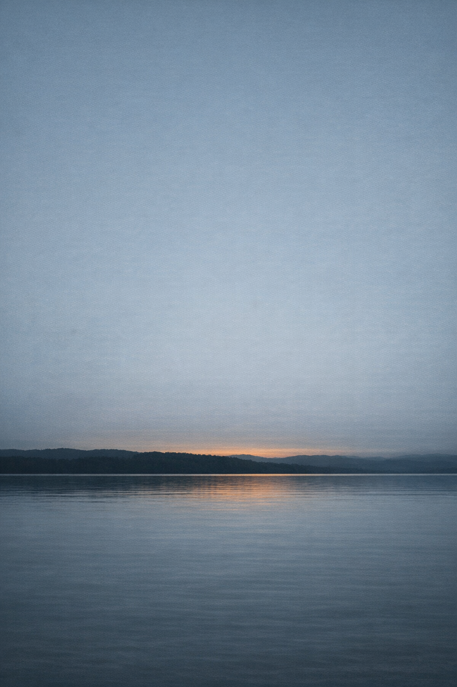

Two Shores
Two Shores
Green Timber
The forenoon watch began with the smell of new timber. Not the salt-and-tar smell Thomas had known for eleven years — not the smell of a ship — but something rawer, resinous, closer to a carpenter’s yard than to a fighting vessel. Confiance had been built in haste and she still carried the evidence of it: the planking overhead not yet fully caulked in places, the gun tackles stiff from the ropewalk, the main deck cannon sitting in their carriages like strangers at a table who had only just been introduced.
He took his station at the larboard number three gun.
The crew assembled around him in the grey light of early morning — eight men besides himself, most of them faces he had been sorting for a week without yet putting names to all of them. Corbett was there, the man from the Channel draft, the one who had made the inland passage with Thomas from Chambly; the others were men the Île aux Noix establishment had scraped together from various stations and drafts, some willing and some not. And then there was the soldier from the 39th Foot standing opposite at the breech — a big man named Rowan, or so Thomas had heard him called, who handled a firearm well enough but had no conception of what the rammer was for.
“Cast loose and provide.”
The tompion came out. The powder boy — a fair-haired child named Weir, fifteen if he was that — took his place aft of the carriage. Thomas’s hands moved through the sequence: breeching rope checked, side tackles paid out, the quoin seated under the breech to the mark. He did not look at Rowan directly when Rowan took up the rammer. He watched the rammer.
The grip. The man held it like a broom. Thomas crossed to him, took the shaft at the midpoint, shifted Rowan’s hands to the correct position without a word, showed him the line of the bore, and stepped back. Let him complete the motion.
The drill finished in reasonable time.
Thomas did not say that it would not have finished in reasonable time under fire. He did not say that nine men who had run the sequence four times together were nine men who had run the sequence four times together, and no more than that. He set the rammer back in its rack and turned to watch Weir secure the powder box. Overhead, from somewhere above the hatch, came the sound of a mallet.
At half-past nine he ran the drill again with the same crew. Rowan’s grip was better; the difficulty now was in a seaman named Curtin who worked the handspike from the wrong angle, coming in from the side rather than the rear, so that when the carriage traversed he would be in the path of the recoil. Thomas moved the bar to the correct position without speaking. The second time Curtin got the angle right. Thomas stepped back and let the sequence complete.
Down the gun line the other stations were finishing their drills in various states. At number five a man had fouled the breeching. At number one the powder box was secured before the traverse was completed, in the wrong order. These were not Thomas’s stations to correct. He walked the line once from number one to number eight, marking what he saw, and returned to his post.
Weir arrived at the carriage a half-step late. The same as before.
When the bell rang eight at noon Thomas secured the gun cover and went below.
The mess was six men at a table forward of the mainmast, the table folded down from the deckhead beams for the meal. Corbett came in just after Thomas. The others — Hamlyn, Fenn, Spry, Curtin, men from the Portsmouth draft, all strangers until the week before — came behind or were already seated when Thomas sat down. The low deckhead made the space close and warm; the lamp above the table swung slightly with the river’s movement. The smell was lamp oil and salt pork and damp wool, which was the smell of the lower deck generally, and below all of it the raw pine that Thomas had been breathing since June. Confiance rode the Richelieu with a shallow, weightless roll, nothing like open water. He was not used to it yet.
The food was salt pork and biscuit. Thomas ate.
“How far south do you reckon?” Fenn said. He addressed the table generally; this was his habit at meals.
“Day and a half,” Hamlyn said. He added nothing to it.
“I heard the American fleet’s already in the bay. The whole squadron at anchor.”
“They’ve been there a week,” Corbett said. “Everyone knows they’re there.”
“So we know what we’re sailing into.”
“Everyone knows what everyone’s sailing into,” Corbett said. “That’s what a war is.”
Thomas broke a piece of biscuit in two and said nothing. He had heard the same reports as any man on the lower deck: the American squadron anchored in Plattsburgh Bay, springs fitted to the anchor cables so that each ship could rotate without weighing and bring a fresh broadside to bear from a fixed position. A man who had arranged his ships with springs had thought about the problem in advance — had looked at the bay, the headland, the prevailing wind direction that would slow any approach from the north, and had prepared accordingly. He set down his cup and finished his meal without speaking further.
He rose when the meal was done. He felt the weight of Elizabeth’s letter in his breast pocket — the paper worn thin at the folds — and did not take it out.
In the early part of the afternoon watch one of the armorers came to the main deck gun line with a gunlock — one of several pieces that had left the Île aux Noix works without a functioning mechanism. He set it on the carriage beside number three and stepped back. Thomas was nearest.
He examined the flint: correctly seated, the jaw angle right. He cocked the hammer and let it fall against the frizzen. The spark was weak. He tried it twice more. On the third fall the frizzen produced nothing. The mainspring had not been tempered to sufficient weight, or had been incorrectly fitted; the hammer came down without force enough to strike reliably. In the damp air of a lake it would fail.
Thomas set the lock on the shelf at the gun’s rear. He took the linstock from its rack behind the carriage, unwound the slow match, and checked it for dryness. It was dry and unlit. He wound it back and returned the bucket to its place behind the carriage.
The linstock would want lighting well before any action. He set it carefully in its place, returned to his post, and said nothing about it. Corbett had watched the examination from start to finish.
In the middle of the afternoon the mallets on the upper deck came louder and more frequent than earlier. Thomas came forward to the main hatch and looked up through the opening.
One of the yard carpenters was at work on a section of planking just forward of the quarterdeck rail — a short French-Canadian man in a checked wool cap, one of four or five still aboard from the Île aux Noix works, finishing what had not been finished before Confiance moved south. Thomas had been told the yard men would go ashore at Cumberland Head before the squadron reached Plattsburgh Bay.
The plank had checked — a shallow split running six or eight feet along the grain, the green timber opening where the outer face had dried and contracted faster than the wood inside. Left unrepaired the strake would not hold caulk. The carpenter was cutting a clean rebate into the crack so that a batten could be fitted over it. He worked steadily and without looking up, without apparent attention to anything on the deck below him or to the sounds of the lake coming up through the hatch.
Thomas watched him for a moment and went back to his gun.
At four the afternoon watch changed. He came up to the gun deck and walked forward to the bow.
To the north the Richelieu ran away between its banks — flat country on both sides, willows and sedge grass above the waterline, cleared fields behind, the sky gone pale blue-grey above the tree line. To the south the river narrowed into the channel that led to the lake. He could see the lake from where he stood: flat grey-green, the New York hills low and dark across the far shore, the distance making them a single line with no detail. He had been looking at those hills since June.
The hardwood crowns on the western bank had begun to bronze at the upper leaves, the first turning of the season. He had been told autumn came earlier here than it did further south, and earlier than it did at home.
The wind was from the south. Light, and from the south most of the day.
He had come aboard in June, when the masts were being stepped at the Île aux Noix works and the gun carriages were coming down from the magazine one at a time. He had helped run the mizzen halyards; he had been below in the rigging party when the last spar was seated and felt the ship settle under him in the way a ship settled when it became itself — the hull recognizing what it was. Below decks she had smelled of pine pitch and fresh sawdust, not salt. She still did. Three months of drills on the river and three months of the Richelieu’s damp had not changed that.
He did not know what would.
He stayed at the rail. The river held the last of the afternoon light — pewter at the smooth center, darker at the banks where the current slackened. From the Vermont shore came the faint smell of wood smoke, crossing the water and gone.
Below, the bell finished striking eight. The first watch was assembling somewhere in the lower deck.
The wind from the south had not changed.
The Sash
The millpond had a smell in early morning — bark-water and mud and the slow damp of slabwood piled at the dam’s lip — and the far bank was still dark under its trees when Asa waded into the shallows and lifted the headgate bar.
The water found the wheel. It moved the way water moved when it got purchase on something: unhurried, and then committed. The buckets filled and tilted. The frame groaned once and then gave to the current’s weight, and the pitman arm took up its stroke. Before Asa was back on the bank the change had come up through the dock planks — a rhythm that started in the floor and went into the legs and from there into everything. The sash dropped and the blade found the air and the mill was running.
He put on his apron and went to the log deck.
The first log was white pine — eight feet, clean grain for most of its length and then a crook at the butt that turned the wood a quarter inch off true. Asa stood the end and read the curve. Not a severe crook, but enough to throw the boards if he ran it blind. He set the carriage oblique so the first face cut would take off the worst of the crook. He drove the dogs in with two mallet strikes apiece, iron biting through bark, and checked the feed ratchet before stepping clear.
The sash came down. The blade bit the end grain and the kerf opened along the wood’s own line, pine resin rising sharp and clean through the dust as the carriage advanced. When the stroke reached the log’s end Asa lifted the feed dog, ran the carriage back, drove the dogs again. The second cut brought the log to flat on one face. After that the carriage ran true and he let the feed work without adjustment.
Elias came through from the equipment lean-to while Asa was setting up the third cut — a broad man going grey at the temple, deliberate in his movements, unhurried in the morning. He was carrying wedges. He looked at the blade tracking and looked at the carriage.
“How does she track?”
“True enough.”
Elias went to the sash frame and checked the lower bolts himself — two fingers on each nut, feeling for looseness through the vibration. He tightened the left one a half-turn and stepped back. Watched the stroke. Then he went to bring up the next log.
They worked through the morning in the rhythm the mill set for them. The sash dropped and rose and dropped again. The boards came off the carriage in courses and went to the drying lean-to, stacked with spacers to let the air through. Outside, the millpond held the grey sky flat on its surface. No wind had come up yet. The birds that had been loud at first light quieted when the sun came level through the east window of the mill, and for a time the loudest sound in the world was the blade.
At mid-morning Asa checked the sash bolts himself — his hands going over the nuts in the same order Elias had used, two fingers on each, feeling for what the vibration was doing to them. The left was good, the right had begun to work loose. He snugged it. Then he went back to the carriage.
Between cuts he watched the way each log moved on the carriage as it advanced into the blade — the slight lean in one, the way a green log that had been stored in water wanted to drift from the dogs if the feed was too quick. He had learned to read this the way he read water: by what moved and what didn’t, what yielded and what pushed back.
Pell came a little after noon — a man from the farm half a mile toward the village, no wagon and no clear errand except the news he was carrying. He stopped at the open mill door and waited until Asa had cleared the last board off the carriage. Elias was at the log deck with a peavey.
“Word from up the lake,” Pell said. “British infantry on the Chazy road. A man came down from Champlain last night.”
Elias set the peavey against the wall. “I heard something like it in June.”
“This fellow said there was a column. More than a raiding party.”
“We’ve had militia talk every summer since the twelfth year.” Elias looked at the next log on the deck. “It comes to nothing.”
“He seemed certain of it.”
“If muster notices go out, they’ll find us. We’re on the road.”
Pell looked at Asa for a moment — nothing particular in it, just the way a man checked who was in the room — then said he’d need two dressed boards for a barn door by end of week if they could get to them.
Elias said they’d have them ready.
Pell went back up the road.
Asa pulled the slabwood scraps off the carriage and tossed them on the scrap pile. Elias was already rolling the next log toward him. Asa picked up his mallet.
His father had walked to the village in the twelfth year, when the Sackett’s Harbor notices went around. Put his name down. Come home that fall with a fever in him. Two years now, and the fever was still there.
The blade came down. Asa watched the kerf open and fed the carriage steady.
The afternoon had six more logs — five white pine and a hemlock. He read each log before he drove the dogs: a slight bow in one that he compensated for with the carriage angle, a knot cluster in another that he fed the blade around more slowly, letting the tooth work the hard ring of the knot instead of forcing it through. The hemlock last, with its tight dense grain that could bind the blade if the carriage came in too fast. He eased the hemlock by hand through the first half of each cut — watching the blade, watching the curl of dust at the kerf mouth, dark with the hemlock’s own oils. Only when the cut was well established did he let it run free. The hemlock boards would be siding on something exposed. Worth the care.
Elias watched him work the hemlock for a time without comment.
Between cuts Asa stacked the drying lean-to, straight-coursing the boards. Warped courses threw water.
He went to clear the spillway at mid-afternoon — a wedge of bark that had come off the log deck in the night and lodged against the dam face, beginning to back water behind it. He pulled it free and walked the dam’s edge to check the intake screen.
From there he could see the river below the pond. The current ran fast through the channel and then spread and shallowed where the gravel bar came up — tea-colored in the deep water, lighter over the bar’s limestone gravel. The ford was another forty yards downstream. He could see the gravel there too, and the clay banks on the far side, pale yellow above the waterline where last spring’s flood had undercut them. September had brought the water down. You could cross at the bar without wetting much above the knee if you hit it right: come in from the upstream angle where the gravel held firm, give the place near the far bank a wide berth where the bottom went soft and gave under the foot. He’d crossed it since before he was tall enough to do it dry.
He cleared the intake screen and went back to the mill.
By the last hour before dark they had run eleven logs. Elias counted the courses in the drying lean-to, finger-counting down the stacks, and said it was near the mark. Maybe at the mark.
Asa went back to the headgate and lowered the bar. The water fell off the wheel. The pitman arm slowed and then stopped and the sash came to rest at the bottom of its travel, the blade hanging still in the kerf of the last board they’d started and not finished. The floor went quiet. Into the quiet came the birds and the river and a woodpecker working somewhere on the ridge above the mill, all of it loud now after being drowned all day.
They ate beside the lean-to. Elias made a fire with scrap pine and put the coffee tin back on it, and they had salt pork and corn bread and the reheated coffee, which was not good but was hot. The boards stacked around them smelled of fresh pine. The Saranac ran below the bank in the last of the day’s light, lower than spring but moving, carrying the sky’s color downstream and then gone past the bend.
The first September cold had come on while they were working. Asa could feel it in the air off the millpond — not a real chill yet, just the summer going out of the evenings. The maples on the ridge hadn’t turned. The high crowns showed the first bronze but the color hadn’t come down yet. Another two weeks, maybe.
No notices had come.
Elias put the fire out and went to check the headgate — he checked it twice at the end of every day — and then they walked back up the road in the dark.
The Lake Opens
The capstan was turning before it was fully light.
Thomas was already at his station — larboard number three, the long twenty-four amidships, the gun he had drilled six days without it ever firing. His crew was in their places: Corbett at the breech-right side, Rowan squared to the left with his arms behind his back, Weir near the hatch to the magazine stair, Curtin on the train tackle. The tompion was in. Thomas left it. The work of getting Confiance out of the Richelieu was not his.
Forward, the capstan’s pawls made their count in the dark — each one another foot of cable coming home from the river bottom. Below that sound, further forward still, a mallet: one of the yard workers from Île aux Noix, at his fitting, the same as every morning these past weeks. Thomas had passed the man on his way down from the head — the one in the checked cap, on his knees at a plank seam with a caulking iron, not looking up. The plank had work yet to be done on it, and the man was doing it, and the ship was leaving regardless.
The September air came cold through the open port. It had the smell of the river in it: mud, the slow rot of willow roots, the faint sweetness of cut grass from the Canadian fields.
The anchor broke free. A different weight came into the ship.
Lines let go from the shore — the splash of the hemp ends going in, one after another along the ship’s side — and then there was only the sound of water. Linnet was ahead off the larboard side: Thomas could make her out against the lesser dark of the eastern sky, already moving under her own way. Beyond her, a gunboat. He could not make out the rest. His world was the main deck and the twenty feet of open water visible through the port.
The banks came close on both sides. The Richelieu was narrow here — narrow for a ship of Confiance’s length — and the Canadian shore passed within a long stone’s throw. In the early grey he could make out cleared farmland, fence lines, a barn roof, the dark shapes of cattle standing in a field. Then willows along the bank and cleared land again and the fortifications of the island falling astern, though from amidships he could only tell this by how the echoes changed — the way another ship’s working sounds came across open water rather than returning from the fort’s stone walls.
His crew did not speak. The deck held a river motion, a long slow lean as the current found the hull. Rowan shifted his weight.
“Stand steady,” Thomas said.
Rowan stilled.
This was his third departure in eleven years — the third time he had left a place he had lived in for months. Plymouth in February 1803. Minorca in the summer of 1807. Île aux Noix now, in September of 1814. He did not look back at the fortifications because there was nothing about them he needed to see again.
Corbett appeared at his elbow. He had come from his place at the breech-right side without being called, which was not regulation, but Thomas let it go.
“Thinking they’ll land the yard men at Cumberland Head,” Corbett said.
“That’s the plan.”
Corbett looked at the passing shore. “Better there than where we’re going.”
He went back to his place.
The Richelieu widened. An hour past the anchorage, by the light — the sky was full grey now, the sun still behind the Vermont hills to the east. The banks had pulled back. On the western side, rough timber and bush came down to the water’s edge. The cleared Quebec farmsteads on the eastern shore appeared less frequently, pale clay-chinked buildings set back from the bank with smoke already beginning from their chimneys.
Linnet was well south and bearing further. The gunboats were fanning out in the widening channel. He could see Chubb and Finch among them, and the rest of the squadron strung behind in a loose column — the twelve gunboats, or near enough to twelve that he could not count the line’s end from where he stood. They were making perhaps two knots. The morning air off the banks was barely enough to fill canvas, and what current there was ran north against them. Forward, the ship’s cutter and launch were out on towing lines, visible when the deck gave him a clear sight past the foremast — four men to a boat, pulling with long, deliberate strokes in the grey water.
From the bow, the leadsman called depths in a steady cadence: two and a half fathoms, three, then three and a half as the channel opened. Thomas heard it but had no use for it. His station was not the bow.
The channel went broader. By degrees the banks stopped being banks.
It happened as it always had: he could not name the exact place where the river ended. The water went a different color first — less brown, less mud-colored, turning toward grey-green. Then the shores that had been close on either hand were no longer close, and then they were shapes, and then the eastern one was mountains.
The Vermont shore: a long dark ridge rising through the morning haze, peak following peak as far south as the eye could follow. The haze was already breaking along the summit line as the sun came level. To the west the New York shore was lower, dark with heavy timber, the hills behind it only dimly present through the brightening sky. Between them the lake ran south and kept running, and the southward swells moved under the hull in a period the Richelieu had never given.
Thomas turned his face into the wind.
South-southwest. Steady. Eight or ten knots. He marked it and turned back to the deck.
Confiance was settling into the lake’s motion now — the hull rising easy and falling easy, a longer period than the river, the swells coming up from the south in long unbroken series. The squadron was spreading on the open water, finding its formation. Linnet nimbler ahead, the gunboats scattered. Confiance was the largest ship in the Champlain basin by a considerable margin. She moved as she always moved: deliberately, with a draft that put her in an awkward position on inland water with its shoals and uncertain soundings. Thomas watched the water alongside and judged the speed and said nothing.
The bosun’s call came from above: three notes, then two.
The men moved to their stations. Thomas was already at his.
“Cast loose and provide.”
The crew moved together — the breeching rope freed from its cleat and hanging in its bight behind the gun, the side tackles taken from their seizings, the train tackle clearing the deck. Curtin had the train tackle in both hands and working. Thomas took the tompion from the muzzle himself and set it against the carriage’s running edge. He pressed his thumb to the vent: clear. He looked at the quoin beneath the breech — fair elevation for a broadside shot across open water. He looked at Rowan.
Rowan had squared to the left side with his arms behind his back, the same position as every drill ashore.
“Sponge your guns.”
Corbett took up the sponge staff and worked it in. Into the bore, the wool compressing against the walls, one full turn, draw back. The head came out clean.
“Load cartridge.”
Weir’s head appeared at the hatch. The boy had the cartridge case in both hands and he came up the stair with care. He arrived at the carriage a half-step late. The same as before. Thomas took the case without comment and handed it to Corbett.
Corbett drew out the cartridge and handled it to the muzzle. The flannel bag seated against the mouth of the bore.
“Ram cartridge.”
Rowan came in at the secondary position, the rammer in his hands, and he had taken it from the wrong shoulder again — left arm leading when it should be right. Thomas stepped to him, one pace, and moved Rowan’s arm across. His hand on the man’s forearm, the grip repositioned, the elbow corrected. Rowan looked at the gun and not at Thomas, which was the correct thing to do. He held the rammer now from the right shoulder. The rammer went home. The cartridge was seated.
“Load round.”
Curtin lifted the twenty-four-pound ball from its holder and passed it to Corbett, who walked it to the muzzle. The wad followed.
“Ram round.”
Rowan drove the rammer down with both hands correct this time — the full length of the stroke, the ball home against the cartridge.
“Run out.”
The side tackles and train tackle went taut and the gun moved. The carriage rolled on its groove, the weight of the barrel carrying it forward, the whole assembly gathering momentum as it reached the port. The muzzle cleared the ship’s side.
Thomas looked past it.
Open water. The Vermont shore far to the east, the ridge of mountains cut sharp now against the morning sky. The lake ran south in long grey-green swells, the same swells moving under the ship’s keel, and the gun’s muzzle rose and fell with them — a slow arc, perhaps three degrees each way, the muzzle going up as the ship rolled to leeward and back down as it rolled to windward. Thomas watched Rowan. The man had not accounted for the motion, had not shifted his weight on the deck to follow the ship’s roll, and stood planted like a man on solid ground. If he fired at the wrong moment of the arc the shot would go high or low by a considerable margin.
“Run in.”
The tackles reversed. The gun came back from the port and Thomas went to the train tackle without hurrying. The block was on the inboard side, and when he reached for it he found the resistance there: the rope was kinked — a bight turned back on itself, badly kinked, where someone had coiled the line from the wrong end after the last drill ashore. He tried the block. It held.
“Hold.”
The crew held.
He worked both hands on the rope, feeling for where the twist began. Close to the block — the worst place, hardest to free. He tried pulling the standing part. The kink drew tighter. He walked the rope back from the block, six inches at a time, finding the loop with his fingers, working the twist down the line and away from the sheave.
Fenn — the younger of the two Portsmouth men, not Curtin — reached in from the side.
Thomas raised one hand without looking at him. Fenn stepped back.
He walked the twist further along the rope, away from the block, until it reached a place where it could be turned out. He turned it out. The rope straightened and the block ran free. He checked the run of the line in the sheave, then the coil on the deck, then the far end at its cleat. The far end was correct. The coiling was the error — from the wrong end, so that the line ran twisted and would kink under load. He ran his eye along the crew without speaking. Weir had gone to the hatch, which was correct. Corbett’s face was composed. Rowan was watching Thomas, and Curtin was watching the gun.
“Run in.”
The gun came back the rest of the way without resistance.
He did not tell them what the delay had meant. In action, a minute’s delay at the train tackle was something that did not need explaining.
“Sponge your guns.”
The second cycle. Corbett was reaching for the staff. Weir had already gone back to the hatch — the boy had understood that the second cycle followed without pause — and his head appeared at the top of the stair with the next cartridge case before Thomas had given the command to load. His timing was correct this time.
The sequence ran through clean. Rowan at the right shoulder without correction. Curtin on the train tackle without a tangle.
“Run out.”
The gun went through the port a second time. The lake past the muzzle, the same long swells passing under the ship from the south. The gun’s muzzle rose and fell in its arc and Thomas watched Rowan find his balance on the deck, the man’s weight shifting unconsciously with the ship — not right yet, but learning. The lake went on past the muzzle, grey-green and open.
“Fire as your guns bear.”
Thomas raised his right hand. His left held the linstock, the slow match burning at its tip, a thread of smoke lifting in the sea air. He brought the match to the vent.
Downstream
Pell came up the road before the mill was running. He had his notice folded in his coat and his own musket on his shoulder and he came around the corner of the millhouse while Asa was in the lean-to with the cant hook and the whetstone.
The Clinton County levy was called up. To report to Plattsburgh village by sundown of the fourth. Pell said a rider had come to his farm two hours before first light with more papers in his bag for the farms upstream. He had known the notice was coming and thought he’d walk up with his own rather than wait for the rider to get there.
Asa set the cant hook against the lean-to wall and went inside.
His musket was on its pegs above the door. He had cleaned it three days before, when Pell had first come up with talk of the British on the Chazy road, and he had kept the priming dry. He took it down, half-cocked the hammer, and checked the flint. He tilted the pan and looked at the powder. Still good. He closed the frizzen, eased the hammer down, and picked up his pack from the floor by the bed.
He had packed it the night before. Blanket, two shirts, salt pork in cloth, the powder horn and extra flints.
Elias had come down from the dam by the time Asa came back outside. He had mud on his boots from the headgate and he was reading the notice that Pell had handed him. He read it twice, folded it back along its creases, and said:
“Sooner than I thought.”
He shook Asa’s hand at the corner of the millhouse. A sawyer’s grip, even in the knuckles, and brief. Then he turned back toward the headgate.
Asa pulled the pack straps even and walked out to the road.
The road ran east along the south bank of the Saranac toward the lake. Three miles from the mill to the village. In September it was dry and packed hard, the spring ruts baked into the surface, and the river ran to his left below the bank in that particular September sound — not the loud rush of the ice-out, not the near silence of late July, but water moving at its own settled pace over a gravel bed in low water.
He passed the clay bank above the Hazen farm. The current had been undercutting that bank for three years that he knew of, and a sycamore above it held the overhang on its roots — a yard of overhanging clay, maybe more, leaning over the water. He had expected every spring flood to take it. It was still there.
The Hazen farm: near meadow mowed twice, far field standing in late grass, the tips gone gold. The farmhouse behind its windbreak of planted spruce. Nobody came to the fence when he went past.
Below the farm the road moved into hardwood timber and away from the river for a quarter mile. Maple and beech, the canopy mostly green still but the high leaves on the silver maples already gone yellow, the crowns giving up before the rest of the tree. In the open places between the trees the sky was a flat white — the September sky, thin and dry, with no blue worth calling blue. The shade was cool. He had not walked this road in anything but warm weather for so long that the cool seemed like a different place.
He stopped after the first mile to shift the blanket roll. He had lashed it too high and felt it in his neck going downhill. He worked the lashing lower, settled the weight back, and went on.
The timber opened and the road came back to the river and the ground leveled off. The Saranac spread here before the village — a wide gravel shelf on the near side, the current braiding across it in shallow riffles, the main channel deep on the far side. He had come through this stretch in April at chest height with both hands out for balance. In September it was knee-deep, maybe less, the pale gravel shelf visible through the clear running water. He walked past it on the road without stopping.
Then the smell hit him. Wood smoke from many fires, horse dung in quantity, the flat iron smell of cannon metal and something else beneath it — the sweetish rot of fresh-turned earth, the smell of ground that had been opened and moved, a whole hillside of it. All of it at once, and more of it than he had expected.
The village was ahead.
Fort Brown sat on the bluff above the south bank and he saw it as he came around the last bend — the earthwork pale and raw, the cut face of it not yet weathered, the cannon on the parapet pointed north over the river. Below the fort, on the slope going down to the water, more work was still in progress. Men were digging and throwing earth into a new section of the line, and a wagon stood stopped in the road with a load of unsplit timber for the abatis stakes. A detail was sharpening the stakes on the far side of the road, the sound of axes coming in short regular strokes.
Asa had been to Plattsburgh for the spring landing, when the Burlington schooners came in, and for the November term at the courthouse. He knew the size of the place. This was not that.
There were men everywhere and at every level of the bluff. Infantry companies in blue coats moving in drill on the open ground above the fort, their officers on the flank calling the steps. Other militia companies from other counties assembled by the main road with their gear laid out on the ground. A battery of artillery pieces on the high ground east of the fort, the limber teams still hitched and the drivers standing to the horses’ heads. The road through the village had become a supply road: wagons, men on horseback, men on foot carrying loads or carrying nothing. A surgeon’s station had been set up near the artillery park, with a table and a man in a white apron moving around it.
Asa asked a man in a blue coat where the Clinton County levy was assembling.
The man pointed down the river road, past the artillery park, and said to go south of the bridge.
There was no bridge.
The timber pilings still stood in the water — stubs where the bridge had been cut away, the tops splintered and pale, standing in a row in the current. On the south bank the stone facing of the near abutment showed where the road approach had been cut back, the stones laid bare. On the north bank, the far abutment stood with nothing between it and the south. The gap in the road on either side was raw.
He had crossed that bridge a hundred times. Loaded wagons on it. Walked it in snow. The planking had been uneven and the central stringer on the downstream side had a soft spot that flexed under a load.
The north bank had been cleared. The trees that had grown along that bank were cut at the root. The stumps were low and white in rows back from the water, and all the undergrowth was gone with them. The north bank ran open and flat — two hundred yards, three hundred — before the standing tree line began again. The field of cut stumps and old root tangles ran back from the water’s edge and the road that had crossed at the bridge came out of the cleared ground in a straight line and ran north between the cut stumps and did not stop at any visible point, just went on until the tree line took it a mile off.
He could see further up that road than he had ever been able to see from this bank.
The road went north. He looked at it for a moment, then turned and walked east along the south bank until he found the assembly point.
Sergeant Dunbar was from Macomb’s regulars — a compact man with a close-cut jaw and a coat repaired at the left elbow with a patch of lighter cloth. He had a ledger book in his left hand and he asked Asa’s name and what county.
“Beckwith. Clinton County. Elias Beckwith’s mill on the Saranac, three miles above.”
Dunbar wrote it.
“You know this river?”
“From here up past the three-mile mark,” Asa said. “And some above that.”
Dunbar looked at him once — the look that takes the measure of something in a single pass, the way a man looks at a beam he is about to trust — then went back to the ledger.
“Then you’re of more use to me than half what I’ve got.”
He said it the way a man states a timber dimension: flat, without trimming. He told Asa where to put his kit and which section of the bank his company held, and moved on to the next man.
The men from Beekmantown came through in the late afternoon.
They came in groups along the north road, mostly on foot, a few on horseback, and some of the walking men were being helped along by the man beside them. They went to the surgeon’s station, the ones who needed it.
Asa watched from the assembly ground while Dunbar ran the company through its first two-rank drill on the bank. The men from Beekmantown moved along the road behind. The ones who walked unassisted walked straight. They had their muskets over their shoulders and their cartridge boxes at their belts, and they had the look of men who had been moving for many hours — the loose step, the eyes going forward on nothing. Some had rags tied at their forearms. One had a piece of linen around his head, dark on one side, and he walked as straight as any of them.
When Dunbar broke the company for water, Asa walked to the well near the courthouse. Four men from the north road had stopped there to drink. Three of them were young — his age or near it. The fourth was older, a tall man with a sunburned face and gray at his temples, and he had the ladle.
Asa asked what it had been like.
The tall man drank, passed the ladle to the man beside him, and looked at Asa.
“Many,” he said.
The men around him did not add to it.
Asa waited.
“More men than this valley has seen in one place,” the tall man said. “Not fencibles. Not any kind of militia. Regulars, off the boats from across the water. Four columns on the State Road, and the Chazy road thicker than the State Road.” He was quiet for a moment. “They’ve been in Portugal. They’ve been in France. You can see it.”
One of the younger men said Captain Leonard’s guns had bought the time they needed — three positions on the road, covering the retirement each time.
“Captain Leonard’s guns and Major Wool’s nerve,” the tall man said. “That’s what held them yesterday. That’s what’s between them and this village right now.”
He looked at Asa once — the same measuring look, there and gone — and then the four of them gathered their muskets and moved on toward the surgeon’s table.
Asa went back to the river when the afternoon light began to go.
The current moved the same as it always had — the tea-colored pull of the main channel, the riffles over the gravel shelf on the near side, the water low and clear over the limestone.
The road went north between the cut stumps and the tree line closed over it a mile off.
The Upper Bridge was a mile and a half upstream from here — taken out the same day as this one, one of Dunbar’s men had told him. Above that, another mile and a half: Pike’s Ford. The river narrowing between clay banks, the gravel bar running south-southeast, the far bank going soft clay underfoot near the edge. Chest-deep over clay in the channel between the bar and the south bank. The crossing he had been able to read from the millpond dam for as long as he had worked the mill.
The north bank was empty. The road ran north and disappeared.
He turned and went back to his station.
Running Out
The bosun’s call had not sounded when Thomas came on deck.
The day was not yet light — the Vermont ridgeline a darkness against a sky still holding a few stars to the west — and he went directly to larboard number three without pausing for anything. The gun sat as he had left it the previous evening: quoin seated to the pencil mark he had made on the carriage face on the first morning of the passage, breeching looped and tied off at the correct tension, the train tackle laid out from the correct end. He ran his hands along the barrel, over the cascabel to the vent. The vent was clear. He checked the apron and the breeching tension — not by measurement, by feel, the right tension known in his hands after eleven years the way a correct weight of line is known. He set the apron back and stood up.
Nothing wrong with the gun. There had never been anything wrong with the gun.
He folded his arms and waited.
The watch changed at six bells. The bosun’s mate put the whistle to his lips and the crew of larboard number three came up from the fore hatchway in the order they had learned over three days’ drilling.
Thomas named them as they came.
Corbett first — the able seaman from the Channel draft, first up the ladder and already tucking his shirttails, a man past thirty who had two years on the North Sea blockade and knew the economy of a ship’s morning without being told. Hamlyn after him: wiry, quick-handed, who had spent two seasons running small gunboats in the Richelieu valley before the posting to Confiance. He had not known what a gun crew meant in practice when they departed Île aux Noix, and he was finding out, which for Hamlyn — who had the underlying sense for machinery and needed only the specific application — was much the same thing as knowing. Rowan the soldier of the 39th Foot, his large hands appearing above the hatchway coaming before the rest of him, the rammer under his arm making the last rungs of the ladder awkward. Fenn and Curtin from Portsmouth, the younger one first. Spry and the man from the Halifax draft whose name Thomas had asked Corbett twice in three days and had not yet fixed in place. Then, at the end of the file, Weir: fair-haired, fourteen or fifteen years old, still pulling at his left ear as if interrupted from sleep, arriving with his cartridge case at the moment when everything else had been in place for half a minute.
He had been at the gun before the call since the first morning on the lake. They had assembled twice now and found him there. Whether any of them had considered what this signified he could not tell.
Stations. Run out.
The morning’s first drill went better than the previous day’s.
Corbett at the sponge: angle correct, the full sweep to the base of the bore without letting the lambswool head dry at the bottom of its stroke. He had found the length and balance of the staff by the second afternoon of drilling and had not mishandled it since. Hamlyn at the breech tackle found the moment of pull without instruction — the Richelieu work had given him a feel for machinery in sequence, a man entering and leaving at the correct moment, and the translation to a gun’s cycle had come to him more readily than it had come to the others. Rowan with the rammer at the right shoulder, holding the position Thomas had set him in on the first day — one hand to the man’s forearm, no words — the stroke measured, not forced. The ball went home. The gun ran out over the water.
Thomas counted the time internally and did not announce it.
The second cycle was faster. The third.
Between cycles he moved among the positions by degree: Spry’s handspike angle a few degrees wide still, the Halifax man’s grip needing an adjustment at the wrist. He made no speech of any of it. He moved a hand or shifted a position and waited for the man to see and correct. The ones who took corrections the first time he noted. The ones who required the correction twice he noted differently.
Fenn and Curtin and Spry and the Halifax man were consistent. They made no errors that introduced risk. They were slow in the way of men who had memorized a sequence without yet having it settle into the body — each position performed correctly but with a small deliberate effort, the kind that disappeared over time or did not, depending on the man.
Weir arrived half a beat behind the sponge on the fourth cycle. On the fifth. On the sixth. The interval was precisely the same each time, a fixed property of the boy’s motion rather than a mistake that varied. Thomas let six cycles run before he moved. On the stand-down he stepped alongside Weir and placed himself at the position where the boy needed to be — at the breech, cartridge ready, at the moment when Corbett’s sponge was still clearing the muzzle — and held the position until the boy registered it. Weir looked at Thomas, looked at the sponge, looked back.
The seventh cycle. Weir was moving before the sponge cleared.
One correction was not a cure. But the boy could hear instruction.
At the midday stand-down Thomas went forward to the mainmast and looked south.
The Vermont shore had changed since the lake entrance. At the Richelieu’s mouth the eastern shore had been a single long dark ridgeline — close, unbroken, running south as far as the eye could follow. Two days’ southing had built it into mountains: the peaks higher as they went south, rounded and settled-looking, forested to the summit, rolling one rank behind another so that the sky above the eastern horizon was complicated with their shapes. The lake’s color had changed with the depth — deeper here than at the northern end, the blue coming from below rather than from the sky’s reflection.
To the west, the New York shore was lower. The Adirondack foothills there were heavy with timber, the ridgelines rounding gently down to the water, dark, unpeaked. The lake between the two shores had enough fetch for the wind to work in it. The same southerly had been on the bow since the lake entrance, and it laid the wavelets against the hull at the same angle it always had, and the squadron made what headway it could.
A schooner came out of the northeast, holding close to the Vermont shore — half a mile of open blue water between her hull and the nearest British gunboat, maintained throughout the pass without any change in course. A Champlain trader, by her lines: broad, low-sided, her sails full on a reach, heading north. She would make Saint Johns or some point on the Richelieu before the season shut the route. She held her heading, kept her distance, and Thomas watched her until the Chubb’s hull took her from view.
In the summer of 1811, aboard the Revenge making north out of Grand Harbour with the detachment from the Adriatic garrison, the wind had been on the quarter and the island of Malta was falling astern, and there was something in a ship moving toward — toward a place with weight in it, with a particular street and a house and a room in Devonport that he had last been in that February before the Adriatic detail — that was distinct from a ship simply moving. A different quality of attention from the deck. A forward lean to the day’s work.
This ship moved south.
He left the mainmast and went back to his gun.
In the afternoon of the second day a cartridge was torn.
The loader had it at the muzzle — the correct angle, the correct height — and the rammer came down on the charge before it had fully settled into the bore, the paper of the cartridge catching on an irregularity at the bore’s edge and giving way. Thomas felt it as a resistance on the rammer before the cycle could complete: a softness where the charge should have been seated cleanly, a wrongness in the feedback of the tool.
He held up his fist. Cease. Clear your vent.
He took the priming wire from its bracket on the carriage side. The wire was narrow iron, just wide enough to pass through the vent into the powder chamber, and he worked it in without haste — turning it once, twice, feeling for the obstruction and finding it, the compressed torn paper at the breech end coming free without forcing anything. He withdrew the wire and handed it to Corbett and waited while Corbett ran it through in turn.
Then he took a fresh cartridge from Weir and turned to the crew.
He held the cartridge at both ends and showed them the correct presentation: the angle and alignment at the bore’s entry, the way the loader’s hands needed to hold it so the leading end was centered, without torque, without being pressed against one side of the bore. Gentler than the men had been handling it. He could see the slight recalibration on two of their faces — a man who has been doing a thing one way and is shown another. The rammer’s work was to drive the charge to the seat; the cartridge’s work was to arrive at the bore’s entry already aligned. The rammer found the rest from there.
He ran the cycle again without further comment.
No error.
A working gun crew, when it was right, made a particular sound.
Not a loud sound. Quieter, in fact, than the sound of a crew that was uncertain of itself — which tended toward unnecessary speech, men calling positions aloud or announcing each step’s completion before the next man was ready to hear it. The sound was a rhythm: twelve men in sequence, the overlap and the gap between positions in the correct proportions, each man’s motion arriving neither too early nor too late, the whole sequence moving as a single mechanism moves, each part’s timing absorbed into the motion of all the parts together.
Thomas had heard that sound from Achilles’ gun deck.
Twenty-first of October 1805. Gun captain at larboard number twelve, twenty-three years old, and the French and Spanish line was three hundred yards to leeward under light wind, the headway barely perceptible, the smell of powder smoke already in the air from the van where the action had begun. What was present on the gun deck around him was not the sound of men who knew the positions. It was the sound of men who had become them. The knowledge had passed into the body and stopped requiring attention — the way water finds a channel and stops needing to discover it — and in that state the crew did not perform a load cycle. The load cycle occurred. Through them. In whatever time the engagement allowed, which was less time than Thomas could now fully account for. The sponge came back, the cartridge arrived, the rammer found the seat, the gun ran out, and then the silence of twelve men in the correct positions waiting — nothing between them and the broadside except the order itself.
His current crew knew the positions.
Corbett had something of the other thing — the sponge arriving at the bore without searching for it, his timing reliable enough that the cartridge could move before the sponge had fully cleared. A drilled crew produced this small overlap without planning it, and Corbett was arriving there. Hamlyn was finding it. The Richelieu work had left him with a facility for machinery in motion, and the translation to the gun’s sequence had been accessible to him in a way it had not been for the soldiers. Rowan was further back: the soldier’s body held itself differently at rest, the stance drifting between corrections back toward a soldier’s stand, the rammer stroke not yet automatic in the way that automatic meant something below the level of attention. The fault was correctible. The time remaining in the southward passage was not enough to close that distance entirely.
The crew was better than it had been when Confiance entered the lake.
In the evening the anchor went down off the Vermont shore — a small indentation in the ridgeline where the trees ran down to the water’s edge and the cove was deep enough to hold a cable’s length. The wind had fallen with the evening. Thomas stood the fourth watch of the day and was at his station while the last light left the water.
The southern lake was visible from this anchorage as it had not been from the previous night’s berth. The channel ahead narrowed slightly — not closed, still many miles of open water, but the mountains filling the southern horizon that had not been there before: the Vermont peaks present to the south as well as the east now, their summits still holding light while the lower slopes had gone to shadow. The Adirondack ridgeline to the west was a flat dark profile against the last grey of the sky, the heavy line of the timber running south without peaks.
The lake held its color past the sky’s — pewter grey deepening without yet becoming black. Cat’s-paws moved soft off the Vermont ridges in the evening air, crossed the water in small irregular lines, and were gone.
He checked the wind.
From the south still. Light, barely registering on a wetted thumb, but from the south as it had been since the lake entrance. Cumberland Head was a day ahead, perhaps a day and a half if the morning wind did not freshen. The yard workers from Île aux Noix were to go ashore there — four or five men, the last of them, the ones who had come aboard with their tools and would leave the ship to be only a ship. Below and aft, one of them was working still by lantern light: the sound of a mallet driving wedges up through the deck planking in short, intermittent strokes. A man finishing a job that should have been done a week earlier, finishing it now by lamplight. Thomas listened to the sound until it stopped.
At two bells the relief watch came on deck. Thomas handed off the station and went below. Corbett was already in his hammock. Curtin sat at the mess table with his supper. Thomas took what there was and sat and ate and did not speak to either of them, and when the lantern was turned down he found his hammock in the dark and lay still and listened to the sounds the ship made: the hull planking working against itself as the hull settled at anchor, the water moving along the ship’s side, the gunboat on the rode astern pulling a little as the evening air came off the eastern ridges and shifted direction.
The gun was in its place. The train tackle was coiled from the correct end. The crew was better than it had been.
He closed his eyes. The watch had four hours to run and he would not be needed.
The Ford
The road followed the south bank of the Saranac upstream. The river appeared on the left at the bends and disappeared between them, always audible. The current ran lower than it had been in June — the limestone shelves breaking the surface in places where Asa remembered depth, the riffles short and busy over the bars. Three miles from the ruined Lower Bridge. He had walked it a hundred times going to the mill.
Dunbar had organized the company before midday. Twenty-two men on the road, moving north of the village and then west with the river’s bend, muskets slanted over the shoulder. Two farm boys from Peru township, one with a plow-hand’s shoulders, one wearing his older brother’s coat. A blacksmith’s assistant, short and forward-leaning, holding his musket like a tool he was comfortable with. The tavern keeper’s son from Beekmantown, whose hands Asa had noticed at muster — smooth, unmarked. Three hunters from the townships north of the lake, lean and unhurried. Holt, who had gone out in the border skirmishes of the twelfth year and said nothing about it. A Black farmer from near the Beekmantown road — Worth, someone had told Asa — who handled his flintlock with the care of a man who knew exactly what it cost. A few others whose faces Asa had before he had their names.
They rounded the last bend above the Hazen farm and the mill came into view.
The millpond was still. The headgate was shut and the wheel was not turning; Elias had closed it. The mill building stood as it had stood all Asa’s life, dark-timbered against the birch screen behind the intake housing. Asa looked at it for the length of one stride and then looked at the ford.
The gravel bar showed forty yards below the intake, paler beneath the current than the surrounding channel bottom — limestone coming up close to the surface on the upstream approach, the riffles spreading as the water shallowed. The bar ran from the north bank out into the river, fifty yards or close to it, and then dropped away. The channel between the bar and the south bank ran deeper and darker, the color of it greener and less transparent, the current compressed in the narrower passage. The clay banks on the north side were pale yellow, undercut at the waterline, a foot of overhang cut back by the spring floods. The pines on the north bank came to within thirty yards of the water. Dense second-growth, no clearing, the shade dark under the canopy.
Dunbar pointed to the rise above the ford and they made camp in the trees behind it.
He set the company in two ranks on the flat ground below the rise before the afternoon heat arrived. Thirty yards back from the bank.
Make ready. The locks to half-cock — most of them, two men still finding the motion. Present. The ranks elevated, uneven at the ends. Fire. Hammers on empty pans, the clicks ragged, two beats behind. Prime and load. The reaching for cartridge boxes, the paper bitten, the powder poured, the ramrods drawn at a range of speeds that had nothing to do with each other.
Dunbar moved through the front rank without speaking for the first two cycles. On the third, he stopped beside Vail — one of the Peru brothers, loading with his right elbow out wide — and pushed the elbow in against the man’s ribs with one hand. Vail looked down, adjusted, and Dunbar moved on.
Holt was the fastest: the drill sitting in his body from three years ago, each step following the last without visible effort or thought. The blacksmith’s assistant had the strength for the ramrod and used it cleanly. Worth had the most composed form on the line — hammer to half-cock, pan charged, ball and powder down, ramrod stroked once and seated, the whole sequence at a constant unhurried speed. By the second cycle Dunbar had moved him to the end of the front rank, where the alignment would dress from.
The three hunters were patient. They ran the drill as they did everything — attending to it without urgency, the sequence absorbed rather than performed. The tavern keeper’s son from Beekmantown was correct and slow.
Four cycles, five. The sequence settling into bodies, in different men at different rates. Asa drilled with them. The series cost him no attention now; what he attended to was the ford and the north bank’s tree line.
In the afternoon, while the company ate and some slept against the pine roots, Asa went to where Dunbar sat above the bank.
The sergeant had his ledger open and was writing in it. He did not look up.
“The gravel bar gives firm footing for fifty yards out from the north bank,” Asa said. “Easy crossing on that approach — flat, limestone bottom, the current not deep. But the channel between the bar and this bank runs chest-deep. Clay bottom. It’s slicker than the bar, and the current compresses there between the bar’s edge and the slope. A column pressing all the way across in formation will have firm ground until they’re fifty yards from this bank. Then they won’t.”
Dunbar turned a page. Still writing.
“How deep is chest-deep?” he said.
“Five feet. Maybe five and a half in the center. I’ll wade it this evening to be sure. The bottom gives underfoot — clay won’t hold a man the way gravel does.”
“How wide is the channel?”
“Thirty yards. Maybe a little more.”
Dunbar closed the ledger and looked at Asa for a moment — the same measuring quiet he had used at the Lower Bridge, not hostile, attending to something.
“Where would you put a man to cover both the bar and the channel?”
Asa pointed to the rise — the eight or ten feet of elevated ground on the south bank where the slope curved up from the water, giving a clear sight line out over the bar and down to the channel mouth. From that position, a man with a musket could reach the bar for its full length and command the channel while it was occupied.
Dunbar stood and walked to the rise. He stood at the top and looked out over the ford: first the bar, then the channel, then the north bank’s tree line. He turned and looked at the channel from that angle. He stood for a minute without speaking.
Then he came back down.
“Keep a man there through the day watch,” he said. “Put it on the night rotation as well.”
He opened his ledger.
That evening Asa waded the ford.
He left his musket with Holt and his cartridge box and powder horn on a branch at the water’s edge and stepped in at the bar’s upstream end.
The gravel was firm. Cold water working around his ankles and calves, the current steady, the bottom secure underfoot. He went across the bar counting his steps: forty-six paces before the footing began to change — before the limestone gave way and the pale grey bottom darkened, before the depth went from knee to thigh in two strides and from thigh to hip in one more, the clay starting under his feet.
The channel was chest-deep. He braced against the current — stronger here than it sounded from the bank, compressed in the narrower corridor between the bar and the slope — and felt the clay working under him. Not mud. Firmer than that. But without the hold that gravel had; the surface offering the sensation of traction where the traction was not quite there when he put weight on it. He moved sideways and the bottom fell away further. He moved back to center and worked his way through the last ten yards.
The north bank was empty. The pines were dark, thirty yards from the water, nothing moving in them. The mud at the bank’s edge showed no boot prints.
He stood for a moment and looked back at the south bank. The ford read differently from the north — the rise visible as a clear elevation above the water, the channel’s depth marked by the change in the current’s color, the bar’s fifty yards plain to see between him and the south bank. He could also see where the footing would fail.
He came back through the channel and up onto the south bank. Holt handed him his musket.
Three days fell into the same shape.
Drill before the heat of the day: the front rank consistent by the second morning, the timing not yet automatic but reliable. Worth at the dress end, Holt running the rear rank through reloading while Dunbar worked the front. The pace picking up.
Watch through the afternoon: a man at the rise on two-hour shifts. The river moved. The north bank’s pines held their shadows and nothing came out of them. Asa took his turns at the rise and stood where he had told Dunbar to stand and watched the bar and the channel mouth and the thirty yards of open mud below the tree line.
Cook fires after dark, behind the trees. Supper. The night rotation beginning at dusk. The company finding its shape — who kept his fire too high, who slept through rain, who was slow in the mornings. Worth and the oldest of the hunters, a man named Covell who had the patience of someone who spent his winters at a trap line, took the far end of the rotation without complaint. Holt told a story about the border skirmishes on the second evening. Asa listened. He did not know what to add.
On the third night, toward four in the morning, a deer came through the ford.
He heard it before he saw it — a step in the shallows, distinct from the river’s sound, deliberate and evenly spaced. The pale shape of it appeared on the bar, a doe moving without hurry, head up and sweeping once toward the south bank.
Taber, at the rise, brought his musket up. Asa heard two others at the watch do the same — locks drawn back, the sound of it in the quiet. He opened his mouth. The shot cracked across the water.
The deer bolted south into the pines. Dunbar came out of the dark before the sound had finished rolling and put his hand on Taber’s shoulder — not hard, not a blow, just the weight of a hand — and held it there. Taber stood with the discharged musket at his side. Around them the company had gone still.
Dunbar took his hand away and returned to his blankets. Nobody else moved for a moment. Then the company settled again, one by one.
The ford was still. The current made its sound over the bar and the channel.
At midnight on the seventh of September, Asa relieved Covell.
Covell had nothing to report. He pulled his blanket around his shoulders and made for camp without looking back at the river, and Asa was alone on the bank.
The sky had cleared in the evening, the clouds moving south after supper. Stars were out — the full canopy of them, the Milky Way a pale smear across the center. The Vermont mountains to the east were darker shapes against the stars, their summits holding a clean line above the timber. To the west the Adirondacks were a flat dark profile, no peaks, the heavy timber running south without interruption.
The Saranac was black below him. Not the tea-color of the daytime river — just black, moving, the surface catching only the faintest cold gloss where the current ran fastest over the bar.
He could separate the sounds: the riffle just downstream where the limestone was closest to the surface — highest and steadiest. The run across the bar itself — lower, broader, the water spreading over a wider face. The channel between the bar and the bank — a slightly compressed note, the sound of water finding a narrower passage. He had been separating these sounds as long as he could remember, standing at the river in the early dark, hearing the shape of the bottom the way it also announced itself underfoot.
The north bank was not visible. Not because anything was there — the pines were dark and there was no movement and no fire — but because the night was the night and the trees were black and there was no moon. The ford was where the ford had always been.
He had heard this sound all his life.
The Dispatch
Cumberland Head came in off the larboard bow in the forenoon watch — low and dark, the long peninsula of it stretching east and south, closing off what lay beyond. Thomas steadied himself against the fore-shrouds and looked. Three days on the lake. He had known it was coming.
The wind was from the southwest. It had been from the southwest since the second morning out of Île aux Noix — steady, light, no change through the night watches. The question of its direction had been the fixed point around which everything else arranged itself. Standing into the bay behind that headland, they would be beating against it. He noted the force — eight knots, or close to it — and the set of the pines on the peninsula’s eastern face as they drew closer. The branches leaned northeast, perceptibly. No sign of veering.
The lake spread flat in the autumn light. To the east the Vermont mountains had risen through the morning — the ridgeline clear now, the nearer slopes distinguishing themselves from the haze, the timber running down to the water’s edge in most places and cutting away only where the lake had eaten into the slope. To the west the New York shore lay lower, heavily wooded, a dark line with no elevation behind it. Between the shores the water was grey-green, the afternoon chop building on the southern fetch. The third morning had the same look as the first two.
He had been at the shrouds through most of the forenoon. His gun was in order — he had been below to confirm it at the change of the watch — and the crew would not muster until the call. The position here gave him the forward sight line with the wind in his face and the approaching horizon unobstructed. He stayed where the problem was visible.
The carpenter’s gang worked on the gundeck forward of the main hatch. Two of them — the Frenchman in the checked wool cap and a younger man who wore his canvas apron even in the morning coolness — were finishing a planked section where the green timber had checked and opened again in the September heat: a crack the width of two fingers, or had been, before the oakum went in. The Frenchman drove his mallet in a steady sequence, strokes never varying in force or interval. Thomas had watched him work in the same way at Île aux Noix, back in June, driving wedges during the stepping of the mizzen. He had been at the build for four months. He would go ashore at the head when they anchored; they all would. He drove the oakum.
Confiance ran south in her column: the Linnet a quarter-mile astern, the Chubb and Finch at intervals, the twelve gunboats spread wide on the larboard beam where the western shore kept them off the shallows. The squadron in the familiar shapes of naval order, flags running flat in the light breeze.
Corbett came up from the cable tier and stood beside him at the shrouds.
“That’ll be it, then,” he said.
“That’ll be it.”
Corbett had twelve years from Portsmouth; he could read a headland as well as any man aboard.
Weir came up through the fore hatch carrying a powder horn and some article Thomas could not make out at the angle and went aft without looking left or right. Thomas watched him go. The boy’s timing had been better through the last two drill cycles — the half-second improvement enough to matter in the sequence. Thomas had been sixteen when he first signed, and the lower deck in those years had seemed full of men he could not yet read.
The mallet continued its steady work forward of the hatch. The Frenchman drove the oakum in; the crack sealed. The head grew ahead, the timber on its east face all pine, the slope gradual and then dropping cleanly at the point to the waterline. Thomas watched the leading edge of it — the very tip where the bay would open.
They rounded Cumberland Head near noon.
The bay came in as the point fell back to the larboard quarter: first a bright line of water, then the full width of it, a mile and a half across, the New York shore flat and dark with timber across the open water. And anchored in a line, one thousand yards from the western shore, the American squadron.
Thomas counted from north to south.
The northernmost vessel was a brig — large, well-armed from the cut of her gun ports, her rig fitted clean. The Eagle, by the talk below decks; she mounted eighteen guns at the reports, though the reports were always uncertain. Then the flag: a square-rigged ship larger than the brig, Macdonough’s pennant at the mainmast head — the Saratoga, the American flagship, thirty-six guns by the intelligence that circulated on the lower deck. South of her: the Ticonderoga, sloop-rigged and flush-decked, and then the Preble, smallest of the four, at the line’s southern end. Gunboats in the intervals and on the flanks — low in the water, bows pointed into the current. He counted the gunboats as well. Twelve of them, or close to it; the southern end of the line was partly obscured by the Ticonderoga’s hull and he could not be certain of the last.
The western shore was close behind the line — close enough to prevent any flanking approach from that side, close enough that a vessel caught between the line and the shore had nowhere to go. The head lay to the north and east; the line lay to the south and west; the shore completed the enclosure. A squadron coming south from the head would move in a corridor between the point and the American line, the approach narrowing as the range closed, with no room to turn on a beat in that space. Not for a squadron of this size.
He looked at the cables.
The Saratoga lay at anchor with the cable running forward from the hawse in the expected way. And from the cable, aft of where it dipped below the surface, a line ran back along the ship’s side and disappeared into a port in the quarter. A spring. The capstan would haul on that line, and the oblique pull of the cable through the hawse would rotate the ship slowly on its anchor — the bows moving through an arc, the starboard broadside coming into action as the larboard broadside was borne away. He knew the mechanism. He looked for confirmation on the next vessel.
He found it on the Eagle. On the Ticonderoga. He assumed it on the Preble.
He had seen springs rigged in harbor exercise at Chatham and at Grand Harbour in Malta — a captain keeping his ship’s head in a tideway, or rotating to present a fresh battery to a quayside target. He had not seen them rigged across four principal vessels in an anchorage, deployed as a tactical system to make rotation as natural as a second broadside. The American commander had turned the fixed position into a weapon: these ships would not move because movement offered no advantage; every gun in the line could be brought to bear from where each vessel sat, and when the larboard broadside was beaten in, the capstan would bring the starboard broadside around.
At Trafalgar the combined fleet had been stretched across two miles of horizon — forty-six ships, the line ragged in places, ships crowded where the intervals had closed and gapped where they had not, two national navies unable to dress a formation without a common system. What lay across this bay was not forty-six ships. It was twelve hundred yards of deliberate geometry, the springs rigged to make the anchored line the equivalent of a moving one.
Thomas noted the wind. Southwest still, unchanged.
He stood at the rail while the squadron made its final approach to the anchorage outside the bay. The head was to larboard now, the full width of the American line visible across the open water. He went on watching. The Saratoga’s pennant reached northeast in the breeze — the same direction as the branches on the eastern face of the head. The same wind that would be against them on the approach was the wind the American commander had relied on when he chose this position. A headwind slowing the British approach. Springs making the anchored line rotate at will.
Confiance came up into the wind off the head in the afternoon and the anchor went down in twelve fathoms. The vessel swung to the breeze and settled. The Linnet found her place to the east; the Chubb and Finch took their positions farther off; the gunboats worked into the shallower water to the north of the bay.
Thomas went below to check his gun.
The carriage was dry and tight. The breeching ropes had not worked loose overnight. He drew the quoin and ran the inspection in the sequence he had run since he was twenty: breech, vent, cascabel, carriage bolts, the bracket with the priming wire, the train tackle coiled from the starboard end. Everything as he had left it. He set the quoin back under the breech, touched the cascabel once in the way he had touched it since Trafalgar — not habit exactly, more like confirmation — and went back up.
On deck the carpenters were packing their tools. The younger man rolled his canvas apron into his bag. The Frenchman coiled his mallet in the canvas roll with his chisels, tied it, and looked once at the planked section he had been working — the caulking driven, the timber dry above the waterline. He tied the roll. He did not look at the rest of the ship.
The jolly boat was called away from the boom: two hands and the coxswain. The carpenters went over the boarding steps one by one — the younger man first, then two others, then the Frenchman last with his roll over one shoulder. He descended the steps at the same unhurried pace he had driven the oakum. The coxswain put the tiller over and the boat pulled for the beach below the pine slope, a quarter-mile off.
Thomas watched until the bow touched the gravel and the men stepped out into the shallows. Then he went forward to the shrouds.
The carpenters had been aboard since before the launch, since the masts were still being stepped and the gun carriages fitted, since before the ship was a ship. They had followed her down from the yard.
The dispatch boat came alongside at first dog watch.
Thomas was coiling a spare line aft of the foremast when he heard the hail from the quarterdeck. He looked up: a pulling boat, two oarsmen, the flag of Prevost’s shore headquarters. He watched it come alongside, watched the man from the bow ascend the boarding steps, and went back to the line.
The letter went aft. Thomas did not see where.
By the time the mess call sounded for supper, the word had reached the gundeck. The mechanism was not traceable precisely — a wardroom servant, the captain’s clerk, the acoustic of this ship in a quiet anchorage with the hatches open — but untraceability had never slowed it. The word arrived in pieces and assembled itself at the mess table in the way it always did.
Hamlyn set down the salt pork and said across the table: “Army wants the fleet to move with the land assault. There’s a date.”
Corbett: “Which date.”
“Day after tomorrow, I’ve heard. Or tomorrow. The accounts differ.” He reached for his biscuit. “What’s agreed is there’s a date and there’s a plan.”
Fenn said he had heard the same from the midshipman’s boy sent up to the gundeck for a powder horn left there. Curtin, at the far end of the bench, said the word at the after hatch was that this was the second pressing — that there had been a dispatch at the last anchorage and the captain had asked for more time, and this was Prevost’s answer.
“Synchronized,” Corbett said. “Naval and land.”
“As they say.”
“The army’s been on that north bank three days.” Not with feeling. An observation, in the way that the wind’s direction was an observation. “They want the bay taken when they go at the fords.”
Spry said he had heard it was two days. The disagreement was not resolved.
Thomas ate his salt pork and listened. He turned the information over once, from one angle and then another: the wind from the southwest; the springs on every cable in the American line; the corridor between the head and the line and the western shore; Confiance on a beat into that corridor, tacking with a crew that had drilled at the guns and not at the braces, approaching a line that could rotate its broadsides without ever lifting an anchor.
He set his spoon down.
He picked it up after a moment and finished the salt pork.
Hamlyn and Fenn fell into a question about the Linnet’s armament — twelves or nines at the broadside, whether it made a material difference to the weight — and Thomas did not engage with it. He drank from his cup. Corbett was watching him in the sideways manner he had, not pressing, attending to something.
“Good weather for it,” Corbett said, eventually.
Thomas said nothing. He finished his meal.
After the second dog watch he went up to the fore-shrouds.
The head lay between him and the bay; the American line was not visible in the dark. He knew its position from the rounding and the bearing he had fixed in his mind before the light went — the Eagle to the south-southwest, the Saratoga a point farther south, the Ticonderoga and Preble beyond her, all riding on their cables and their springs in the dark, the Vermont shore behind them.
The mountains were losing the last light. The highest peaks to the south still held a thin orange above the timber, fading now, the ridgeline going dark from the north. The lake was black in the shadow of the head. The anchor cable creaked in the hawse as the ship took the swell.
There was a date in a letter in Downie’s cabin and the date was near. The bay lay there in the dark to the southwest, ready.
He noted the wind. Southwest still.
He went below.
Beekmantown
The bar showed pale in the early light, the limestone close to the surface where the current ran thinnest over the gravel. Along the north bank the clay was grey-yellow in the September morning, the pines still dark against the sky above it. The current made its sound over the bar and through the channel, the same sound it had made since the company arrived.
The drill had been running since first light.
Worth was at the dress end of the front rank, and the line dressed from him this morning — the other men finding their positions relative to his shoulder without waiting for Dunbar to set them. The commands moved through the sequence and the hammers came down on empty pans nearly together — not crisp yet, but arriving at something close to the same moment.
Dunbar stood at the line’s far end and watched. He had moved past correcting the basic positions; what he was looking for now was the hesitation between steps — the small interval where thought was still filling a space that reflex had not yet claimed. The front rank had the shapes correct. Whether the shapes had become the thing was still the question.
Holt ran the rear rank while Dunbar watched the front. He moved without speaking, a touch at an elbow or the line of a ramrod, corrections too slight for the men to identify. He had the drill in his body from the border skirmishes in the twelfth year.
Asa drilled with them. The sequence was settling in. What he attended to was the north bank.
The ford’s north bank was unchanged: pines behind the clay, the open mud at the water’s edge unmarked, the thirty yards of open ground between tree line and water empty in the morning light. The bar’s far side was quiet. Downstream the road sounds came up to the ford — horses on the hard clay road, wheels, the occasional carrying voice from the army’s camps on both banks. The valley had been full of that sound since the company left Plattsburgh. It had stopped seeming like a particular thing.
At midday they broke for food. The company had settled into the site the way men settle into any place they’ve come back to each morning: a stone each man favored, a rotation at the water bucket, the small arrangements of the camp established without needing to be stated. The day was ordinary. The north bank was empty.
They went back to drill.
The sound came in the early afternoon.
He heard it first as a wrongness — a texture that didn’t fit what the valley had been making all day. He stopped loading and listened. Then it resolved: flat cracks, muskets firing in quantity, the reports overlapping. Too far off to count. It came from the north and east, several miles.
Something heavier arrived beneath the musket fire a moment later — a long concussion reaching through the chest rather than the ears, with a delay after the first sharp edge of it. Artillery. Not a single gun: the report was full and the interval between shots too short for reloading one piece. More than one, firing in support of something that was moving.
The company had stopped. Most of them were looking north.
Dunbar was already facing that direction, hand shading his eyes, reading the direction of the sound.
“Hold your position.”
They held.
The firing ran in bursts, each burst broken from the next by a silence that held the expectation of the next one. In the silences the valley’s ordinary sounds came back — the horse traffic on the road downstream, the army’s constant low noise. Then another burst, longer than the first. Then silence again.
Covell, at the far end of the watch rotation, said quietly to no one: “Moving south.”
The sound changed over the hour — not measurably in any single interval, but the direction of it shifted slightly each time, the source getting closer and more due north. The artillery was covering a retirement. Whatever had met the British columns on the road from Canada was giving ground toward the Saranac.
The firing ran for the better part of an hour. Then a longer interval. Then widely spaced shots at a greater distance, three or four, the last barely distinguishable from silence. Then only the valley.
Dunbar called for water. They drank and held position.
No one asked what had happened.
The soldiers came around the bend in the south bank road in the late afternoon.
Eight first, then four more around the same bend, then a final two at a longer interval behind them. Soldiers on foot, moving south at walking pace, the shape of a company dissolved into the easier order of men who have settled the main question of the day and are now only moving. Muskets at trail or over the shoulder. Coats open in the September chill. One man walked with his free hand pressed flat against his right side beneath the open coat, pressing steadily without looking at the place he was pressing.
The man with the wrapped arm was in the middle of the first group. The linen went from wrist to above the elbow and was dark through its full length — not damp-dark, but the other kind. He carried the arm against his body at an angle that wasn’t the arm’s natural angle, the way a man carries a thing that will cost him to drop.
Dunbar sent Holt to the road to bring them up.
They came to the ford and stopped. Asa had the water bucket on the bank before they arrived. Some went to it immediately; one man cupped his hands and drank from the bucket’s edge before the ladle was offered. Others sat down in the shade of the rise. The man with the wrapped arm lowered himself to the ground with precise care — a man who had taken inventory of what motion cost and was spending it exactly. He sat with his back against the rise’s bank and looked at the water bucket.
Asa passed him the ladle.
He drank twice and returned it. He put his head back against the clay bank for a moment and closed his eyes. Then he opened them and looked at the ford: the bar, the channel, the north bank’s pine line. Taking it in with a look that wasn’t a traveler’s look.
Private, 29th Infantry — the number on his cap plate. Older, gray at the temples. Tall. Sunburned. The expression of someone who had used what the day asked and had not yet arrived at the part where he thought about it.
“Beekmantown,” Asa said.
The man looked at him. Then back out at the ford.
“Halsey’s Corners first,” he said. His voice was level, not slow — the pace of a man giving an account he had given already and would give again before night. “Captain Leonard had the guns at the first position. Moved them to Culver Hill, then back. Three positions on the retirement, maybe four. He bought what time was bought.” He stopped. He looked at the arm against his side. “Major Wool brought the companies out correctly. But they came in four columns on the State Road and the Chazy road was full as well. Peninsular men — not fencibles, not green. Moving fast. Well dressed.” He looked at the ford again. “There was no holding them at Beekmantown. We held them long enough.”
“How far back are they now.”
“Their van will be at the river before dark.” He moved his free hand on the ground beside him and pushed himself to standing, keeping the arm still while the rest of him moved. He looked down at Asa for a moment. “You’re militia.”
“Clinton County.”
He looked at the ford: the bar and the channel and the north bank’s tree line, all of it.
“The ford’s the only crossing left.”
“The only one we know of,” Dunbar said, from the rise behind them.
The man nodded once. He picked up his musket and walked to where the road bent south. The others fell in behind him in the loose order of men who knew the direction. They rounded the bend and were gone.
The company was quieter for it.
Nothing was said. Dunbar posted the full watch for the remaining afternoon — all twenty-two men on the bank, no one drawn back to the cook fires, no one resting. He opened his ledger and wrote in it for several minutes and closed it.
The mill was three miles upstream, the headgate shut and the wheel still. The road south was carrying the army’s retreating soldiers past. The ford was here.
Asa went to his musket.
The action was clean — he had cleaned it the evening before and kept it so — but he went through it anyway. Lock to half-cock, pan opened, frizzen against the spring and seated correctly. The flint was sharp; he had put a fresh one in at Plattsburgh before the company moved to the ford. He closed the pan and brought the lock back to half-cock and checked the cock’s tension. He did not prime it yet. That would come at dusk.
He set the musket against the bank and sat beside it.
Holt had not moved from his position at the rise. He was watching the north bank pines with the stillness of a man who had spent time at this kind of waiting before.
“How far is Beekmantown,” he said.
“Five miles. Maybe a little more.”
Holt thought about it for a moment.
“Long five miles today,” he said.
Asa said nothing. He looked at the ford: the fifty yards of pale gravel, the channel’s darker color between bar and slope. A column crossing from the north would have firm footing for fifty yards and reach the clay at the channel — the current compressed in the narrower passage, the clay bottom giving under a loaded man’s weight in a way gravel never did. He had said this to Dunbar the day after the company arrived and Dunbar had walked the rise and put a man on watch.
The afternoon was still early.
When the light began to go he primed the pan, seated the frizzen, and brought the lock to half-cock. He rested the musket across his knees.
An hour before dusk Asa was at the water’s edge below the rise when the movement caught him downstream.
He had been watching the ford’s own north bank — the mud at the water’s edge still unmarked, the pines still — when something in the edge of his vision moved. He turned his head to the right.
Half a mile downstream, or a little more, where the river bent south and the north bank timber came to the water in a long slope. The canopy was still. No wind moving the fine branches or the needles, no general motion in the tree line. What he had seen was something working between the trunks — deliberate, stopping where the timber was dense, moving where it opened.
He stood without moving and looked at the place.
Twenty yards east of the first movement, a second: the same quality, moving south at a different pace. A pause, then another step. Two men visible in fragments — but the pauses were distributed too widely for just two men, spread along the line as if more shapes were working the sections he wasn’t finding.
Red cloth once, in a gap between two pines, at the height of a man’s chest. There and gone before he had his full attention on it. He kept his eyes on the same interval and waited.
He had read deer this way — holding his look on the tree line without pressing it, letting the patience do the work, waiting for the fragments to resolve into one shape with a direction and a purpose. The longer he held his look on a dark tree line the more it gave up. The deer became a deer. The trick of light became a moving thing. You did not hurry it.
He watched for several minutes. The movement continued: south along the north bank, working deliberately through the timber, pausing in the dense parts and advancing in the gaps. Each pause at the right interval — the interval a man used when he was choosing his ground, not the interval of wind or of an animal uncertain of what it smelled. He counted three separate points of movement in the tree line before he was satisfied with the count.
Red cloth again, briefly. A fragment, at chest height, the same interval as before.
He turned and walked back to where Dunbar stood on the rise.
“Downstream. Half mile. North bank. Movement in the tree line.”
Dunbar came to the bank. He stood beside Asa and looked where Asa pointed. The trees were still for a moment — the movement had paused. Then it began again: deliberate, south, stopping in the dense cover and advancing in the open intervals.
Dunbar watched it for a long time. He said nothing. He went back to the company and spoke quietly to Holt, then to Worth, then to three men near the end of the line. Asa could not hear what he said. He watched the downstream tree line until the light began to fail.
They ate off the cold fires.
The dusk came in from the east, the Vermont ridgeline going flat and dark against the last color in the sky. The temperature had dropped through the afternoon; the September night arrived with a chill. Asa sat on the rise above the ford and ate cornbread and watched the ford’s north bank. The pale mud at the water’s edge was clean. The pines were dark. The current made its layered sound over the bar and through the channel — the riffle where the limestone was closest to the surface, the run across the bar itself, the compressed note of the channel between bar and south slope. He had been separating those sounds since before he was old enough to name them.
The fires appeared as the full dark came on.
One first, to the northeast, where the north bank tree line bent toward the river’s angle — an orange point in the dark, brightening as the wood caught. Then a second farther east. Then a third between them, growing as the distance allowed. Three fires spread along the north bank at intervals too wide for cook fires — placed along the bank the way a man places watch fires, for sight lines rather than warmth. A fourth appeared farther east as the last trace of color left the sky.
He watched them burn.
The ford’s own north bank held dark water and the clean mud. But downstream the fires were plain to see, orange and steady where the wood was dry, and they cast their light across the north bank of the Saranac as if the bank had always belonged to someone.
Riding at Anchor
The forenoon watch opened flat and gray above the head, the lake holding no wind yet, the great dark ridge of Vermont running south through the morning haze until the mountains’ higher shoulders were lost in cloud. The cove at Cumberland Head was calm — the kind of calm that belonged to a body of water not yet decided about the day — and Confiance lay at single anchor in twelve fathoms, her cable hanging straight down through the shadow the hull made on the bottom, her deck still as a deck aboard ship is almost never still.
Thomas had learned by the second day what stillness did to a ship’s company. At sea, the motion was constant — the roll and correction that had become the body’s floor, the familiar instability that a sailor worked on and against without thinking. At anchor the deck was flat, the hull did not move, and the men walked on it as if on the ground and forgot what they knew. He had seen it at Spithead and he had seen it on the lake and he saw it now: Rowan at his post with his feet too close together, his weight settled back and down the way a man’s weight settles on solid ground, all the patient correction of the past five days already relaxed out of his posture in a night and a morning of quiet water.
He ran his crew through the sequence before the change of the forenoon watch, and the first time they were adequate in the way they had been adequate for a week — no man bungling his step outright, the sequence moving from run-out to prime to ready in a time that would not shame the gun wholly. Weir arrived at the carriage a half-step late, as Weir always did. Fenn, on the side tackle larboard, was already quick; he had been quick since the first day on the lake. Hamlyn worked the train tackle. Rowan on the rammer was the concern and was always the concern — not his desire, not his effort, both of which were adequate, but his feet and what his feet were doing on the deck, which was always the wrong thing.
He drilled them again after the mess, in the first dog watch, when the light was still good. The second time was different. He could see Hamlyn shift before the sequence required it — a small thing, a half-movement at the hip before the train tackle came taut, as though Hamlyn had begun to hear the gun as a piece of machinery rather than as a series of ordered actions with a pause at each joint. The gun crew of larboard number twelve aboard Achilles had sounded like that at the end of a long drill — not the formal sound of men executing steps, but the looser sound of a working machine, each component beginning to move in its time because the mechanism understood its time. Hamlyn had not found it — he was only at the edge of it, at the place where the noise of the machinery starts to make a different kind of sense — but the difference was present in those two runs, the first adequate, the second almost well.
Rowan had not made the same progress. Thomas put his hand once against the man’s right shoulder, a single correction that pressed his weight forward and broke the ground-settled balance; Rowan took the correction and held it through the rest of the sequence and the run finished as it should. He would not hold it across the night. He never did.
Thomas noted neither man and said nothing to either.
The dispatch boat came from shore in the afternoon, handling in through the anchorage to come alongside in the manner of a craft that had done this before and knew the approach. Thomas was at his station and heard the boat rather than saw it — the hail from the water, the answering hail from Confiance’s side, the movement of men on the deck above him as the packet was taken up and carried aft.
The previous dispatch had arrived in the same way, at the same hour, from the same direction. That one had been Curtin’s news at supper — the second pressing, as Corbett had it — and this one moved through the ship the same way, that particular motion of information whose source no man on the lower deck could specify but that arrived, eventually, at every man. The form of it reached Thomas through Corbett, who had it from Hamlyn, who had it from one of the men of the afterguard; the form was the same it had been before: the army was ready, Prevost’s people wished the fleet to move, the date was tomorrow or the day after, and the land and water were to act together.
What changed was the tone. The first letter had set a date, or something near a date. This letter, as the word traveled, had pressed the date closer — not clarified it but pressed it, the way a man presses a door without opening it to show that the door will not hold forever. The engagement was to be tomorrow. Or the day after. The army was not prepared to wait.
At supper Curtin said it was the third letter.
Corbett said the second pressing. The letter before was not a pressing, it was a date. This was the pressing.
Curtin was not persuaded. He said pressing was a matter of tone, not number.
Thomas ate his biscuit and said nothing. The distinction seemed to him to belong to a larger conversation than the one they were in.
He had the gunlock off its plate before the watch changed.
The tool roll was in his chest under the hammock — a length of sailcloth folded over three implements he had put together at Devonport in the winter before he joined Achilles and had carried in every sea chest since: a mainspring vise of bent iron with a captive clamp, a turnscrew with a worn handle wrapped twice in tarred twine, and a punch of hardened steel barely wide enough to drift the pins from their seats without enlarging them. The clamp screw of the vise was stiff with age and salt and turned only with some effort; everything else moved as it should. He brought the roll and the lock to the mess table where the light was better, unrolled the cloth, and began.
He had been thinking about the spring since Île aux Noix — since the afternoon he had tested the lock’s hammer fall and felt it come down without the conviction a spark required. It was possible the problem was the spring’s temper, which no tool available to him would improve. It was equally possible — he had seen this at Mahon in 1808, on a lock badly assembled after a cleaning — that the spring was fitted with its toe poorly positioned against the tumbler face, the geometry wrong by a degree or two, enough to bleed force from the throw before the hammer could use it. The armory had replacement springs from the Île aux Noix stores, still wrapped in oilcloth. If the fit was wrong, a replacement would not cure it. If the temper was wrong, the replacement might.
He seated the vise on the spring, took up the compression carefully, and freed the tumbler. The lock’s interior came apart on the table in the order he expected — lockplate, bridle, cock, sear, tumbler — each piece set in a row on the sailcloth so the sequence could go back without thought. He turned the mainspring in his hands. Nothing visible was wrong. He positioned his thumbnail against the spring’s curve and pressed: the spring resisted, but the resistance had a softness at the end, a giving-out before the full load was taken, that explained everything he had been hearing in the hammer’s fall. The temper was not catastrophically wrong; it was wrong in the way that a borderline tool is wrong, adequate under ideal conditions and unreliable under any other. He had, in eleven years, seen six locks pull spark from a frizzen in every condition of cold and damp and concussion that a ship’s action produced, and three of them had been locks no different from this one.
He found the replacement spring in the armory. The man on duty — one of the warrant officer’s mates, a thin, disinterested man who had been reading when Thomas arrived — took the spring from the oilcloth stores without comment and handed it across and went back to his reading.
The new spring was wound heavier and a degree shorter — not a matched replacement but a near one, the closest in the store. He fitted the spring to the plate, compressed the vise, seated the tumbler, checked the bridle screw and adjusted it three turns against the new spring’s weight, and worked the cock through its range of motion. Too heavy at the half-cock. He backed the bridle two turns and tried again. Better. The cock fell clean; the frizzen face opened at the blow; he struck the hammer against a square of tinder and the spark was a reliable shower, bright and full in the lantern light.
He carried the reassembled lock back to the gun and fitted it to the plate. Then he took the linstock from its hook at the carriage side and set it in the bracket beside the touch-hole, the length of slowmatch hanging in its coil over the fork.
The lock would fire under the conditions of a bench. Whether it would fire under the conditions of a deck being worked by American shot, the vibration of twelve guns in action working on every plate and fitting aboard, was a question no bench work answered. The linstock made no such question. It would light when the end of the match was put to the vent; it would light if the deck was shaking and it would light if the gun had been fired eleven times. He set it in the bracket and left it there.
Later that afternoon he was forward of the main hatch, making his way aft along the gundeck, when he passed the section of planking that had been the carpenters’ last work aboard.
The plank had opened at the seam sometime during the lake passage — a narrow split working along the joint, opened by the alternating sun and the cool nights on the water, the kind of seam failure that was an ordinary event in a ship with green-timber planks not yet fully seasoned. The Île aux Noix man had laid the oakum correctly and hammered it home and refastened the plank before he went ashore. The work was good. The joint was tight, the plank flush with the deck, the surface showing no evidence of what it had been three days ago.
Thomas paused and looked at it. A man who had spent three weeks aboard this ship, who had learned its deck’s irregularities by the feel of his tools working on them, had done this correctly and then descended the boarding steps into the jolly boat and been rowed to the beach below the head’s pine slope and had not returned. He had laid his plank correctly and gone home, or wherever men from Île aux Noix went when the work was done.
Thomas moved on aft.
The second dog watch gave him an hour below that he had not expected. The coincidence of the duty list fell against his name in a useful way for once; Corbett was in the hammock already, turned toward the hull, his breathing even. Fenn and Spry were at cards at the far end of the mess table, playing quietly, their voices almost nothing.
Thomas sat and did not take the letter from his pocket.
He had not taken it out in front of the others for as long as he had been aboard Confiance, which was twelve weeks. He had not opened it on the lake. He had read it last in late June, alone in the lower berth of the lodging house at Île aux Noix, the morning before the crew began arriving from the transports, and since then he had carried it folded in his breast pocket as he had carried it for two months, the paper grown thin at the creases, the ink along the folds worn to faint shapes that no longer read as letters but that he could read because he knew what they were.
He had thought about sending a reply. He had written one, or the start of one, in Île aux Noix — the first two sentences, on a page he had afterward used for something else, unable to arrive at the third sentence in a way that did not seem worse than silence. There was nothing she did not already know that he could tell her, and the things she would want to know were not things he could set down in a letter from here with any certainty they were true. He would be home in the autumn, or he would not. The voyage would be short, or it would not.
In Devonport she would be in the east-facing room — the one her parents had given over to her while he was away, because it had the better light — and the child would be there, the boy he had seen in no account other than a single line of a letter two months old. He allowed himself the room for a moment, the morning light, and then stopped.
He ate his biscuit and went on deck.
The night watch found him at the larboard bow, his forearms on the rail above the hawse, the cable going down in a straight line into water that was black below the moon’s light and dark silver where the moon touched it.
The sky was clear, a three-quarter moon low in the west, its light giving the lake a surface without depth — a flat shining field that extended south and east as far as the eye could reach. The Vermont mountains were shapes against the stars, the ridgeline distinct where it rose above the cloud that had sat on the higher shoulders all day. To the west the New York shore was a flat dark profile without peaks, the Adirondack timber going to the water without variation.
The American fleet was less than two miles south, lying where it had lain when he last had sight of it. There were no lights from that direction. The head’s tree line closed the view entirely — the pines standing at the headland’s end between the two anchorages, holding the darkness on both sides without preference. He knew where the ships were. He could not see them.
He listened across the water for some time. The lake returned nothing — no sound of another anchor watch, no sound of a capstan turning, no sound that did not belong to Confiance herself or to the water that held her. The hull below him made its slow sounds: the plank seams working against each other as the temperature fell, the cable tightening and easing in the hawse as the ship moved on her scope, the water at the waterline in its irregular wash. He separated what was the ship from what was the lake and held the distinction.
The wind had shifted through the afternoon watch, perhaps a degree or two of arc toward the northwest, perhaps a degree and a half — not enough to change the approach to the bay, not enough to make the headwind anything other than what it had been for the length of the passage. Still a headwind for the bay. The lake’s surface moved in its long low pattern from the southwest, from the direction of the American anchorage, which was in the direction of everything this flotilla had come south to do.
The bell came forward from the quarterdeck in the dark, measured and clear over the water.
He did not move from the rail. The half-hour bell arrived and then the full-hour bell and then the water was the same water and the mountains were the same mountains and the line of the head’s pines held the dark as they had held it since before he had come to stand at this bow. The moon descended toward the New York shore and its light on the lake narrowed and then lay flat and then was a thin line and then was not.
Somewhere behind the head the American fleet rode at anchor on its springs.
Somewhere aft in the captain’s cabin the dispatches lay, two of them now, the army’s twice-stated reckoning of what the fleet owed.
The watch bell came forward again, and the night was what the night was, and after a while the watch was done.
The Night Crossing
The river ran its September color through the bottom of Asa’s sight from the rise — tea-brown in the deep channel, pale and limestone-clear over the gravel bar, the ford lying the same at six in the morning as at noon as at six in the evening. By the third day of the standoff he had stopped thinking of it as a view and started thinking of it as the place he was.
Four days into the posting. The company had begun to settle into the position the way men settle into any fixed work — not with ease, exactly, but with the kind of familiarity that comes from sleeping on the same ground and standing the same watch rotations until the ground and the hours stop being strange and become just where a man is and when he is there. Asa had spent enough time among these men now to have started reading them the way he read a piece of timber before he worked it: by grain, by likely bow, by the direction a man would warp when the load came on. Holt did not need to be told where his position was; he had placed himself correctly since the first day and stayed there. Worth dressed the front rank’s near end and made the men around him look ragged by comparison, his form exactly right, the musket held the way a thing is held correctly when the holding has become second nature. Covell stood his watch with the patient inward attention that worked well on a watch — the patience of a man who has spent cold mornings in the timber waiting for an animal that may or may not come and who understands that the waiting is the work. Taber watched with too much energy, which had once made him fire at a deer crossing the ford in the dark; Dunbar had moved him from the near-water position to the tree-line position, where he had more shadow and less to startle at.
Dunbar ran the drill each morning. The commands were clean, without extra words, and the corrections were made with a touch when a touch was sufficient and a word when it was not. After four mornings the sequence had worked into the company’s hands. The front rank loaded and fired and fell back in reasonable time. The rear rank came forward and dressed and their intervals were where intervals ought to be when Dunbar told them to dress. It was not seamless. The seams showed if you watched for them, and Dunbar always watched for them, in that expressionless way of his that Asa had come to understand as the form of his competence rather than the form of his displeasure.
The watching was the other work — the larger part of it, the part that had no sequence and no command to make it start.
At the ford the north bank was empty. It had been empty through the four days. No boot prints in the mud when the morning light came in low enough to show them; no fire at the ford level, no movement in the pines.
Half a mile downstream it was different.
The sounds reached the ford in fragments when the wind was right, on the mornings of September 8 and 9 both: the percussion of digging, or the strike of metal on metal that carries further through still air than speech does, or the sound of something dragged over ground. It came at him in broken pieces, the river’s bend and the timber between making the direction hard to fix. But the quality was consistent across the two mornings — the sound of men working at a task, not men at ease, not men making their fire or their meal but men doing a thing that required tools and effort and time.
He watched the north bank downstream through the mornings — holding his sight line at the gap in the tree line where it was longest, south of the ford by a quarter mile, where the Saranac curved and the timber opened briefly on the north side before closing again. Occasionally there was red: a fragment of coat, moving through the gap in a way that was deliberate, returning to the same location, the motion of a man at a fixed station rather than a man passing through. He watched until the sight line closed. He kept his eyes on where it had been.
Dunbar spent some time on the rise beside him on the afternoon of September 8, looking downstream without speaking. Then he went back to the company and ran the drill again.
At night the picket fires on the north bank downstream burned in their four positions, spaced at the intervals Asa had read as sight-line fires on the first night — short enough between them that the spaces were lit by the fires’ outer reach rather than left entirely dark. He watched the fires from the rise until his watch ended, then lay on his ground sheet in the trees and listened to the river until he slept.
On the morning of September 9 the digging sounds began again before the light was full — earlier than the day before, and louder, or the wind was carrying them better. He went to Dunbar with it. Dunbar listened, looked downstream once, and then went back to the company and told Holt to put an additional man on the south bank road watch, facing downstream, for the rest of the day.
The word came late in the afternoon of September 9.
A rider from Plattsburgh, on a horse ridden hard enough to be blowing, came up the south bank road to the ford. Dunbar walked out to him. They spoke for two or three minutes; the rider turned south again without dismounting. Dunbar came back to the company at the rise.
Captain McGlassin’s company of regulars would cross the Saranac that night, downstream, at a point nearer the British picket line. Their purpose was disruption and prisoners. It was not the ford company’s assignment. The ford company was to remain at the ford through the night.
He said this once, without elaboration, and then called Holt and Worth to him and walked the watch positions again — going to each one in turn, spending time at the position above the channel mouth that Asa had recommended to him three days earlier, checking the sight lines in the afternoon light.
Among the company afterward there was talk. Asa heard its character — not discontent exactly but the sound of men reassessing what they had. Two of the company thought they should have been included; a third said regulars preferred not to take militia on night crossings. Vail said something quiet to his brother and his brother shrugged. Taber said he would have gone.
Covell set his musket against a tree, sat on a root, and studied his hands for a while.
Asa cleaned his musket in the last good light and reprimed it and kept his opinions about the raid assignment to himself. He had been at this ford for four days and he knew the ford — the bar, the channel, the clay bottom that gave underfoot when a loaded man pressed on it — and the ford was where Dunbar had placed him and where the work was. He stowed the cleaning cloth and went to take the evening watch.
His midnight watch.
The river ran its hiss at the gravel bar — the steady sound of water moving over limestone, the same sound Asa had gone to sleep by for years at the mill — and the north bank pines made their dark wall above the pale strip of riverbank mud and the birch trunks caught the starlight and showed as two pale marks where the sight line was longest. No movement at the ford. No fire visible from the ford. The four picket fires downstream showed their color through the timber, low and red, the trunks between them making dark columns across the glow.
He stood at the rise with the musket across his arm, watching the north bank and the ford and then the north bank, and listened to what the river had to say, which was what it always said.
Past what he reckoned as midnight, the sounds came from downstream.
Shouting first — not commands but the mixed irregular voices of men in close work, no words distinguishable across the distance and the timber, just the sound of voices that were not trying to be quiet. Then musket fire: ragged, not the even sequence he had drilled six times a day for four days but the broken rhythm of skirmish work — three or four shots in quick succession, then one alone, then a pause, then two together, and his ear kept reassigning the direction as the sounds came at him: south of east, then east, then further south, the river bend and the tree line carrying them wrong. He did not know the exact distance. He did not know from the sound which side was which.
He kept his eyes on the north bank of the ford.
The birch trunks were still. The pines were still. The river ran its sound at the bar.
The firing went for some minutes and then went quiet. The quiet lasted a little — thirty seconds, perhaps a minute, perhaps longer, the kind of quiet that comes after a thing rather than before. Then shouting again, shorter and sharper, the particular sound of something concluded, and then nothing. The picket fires showed their glow through the timber unchanged, or so far as he could tell from the ford. He did not know if the fires had moved.
He turned back to the ford and watched what was left of his watch out. The north bank was still and dark and gave back nothing. The river ran. The four fires showed their color in the timber downstream.
When the relief came he reported the ford clean and went to his ground sheet and lay on it without sleeping for a time, listening to the river, and then slept.
Before first light on September 10 he heard them on the south bank road.
Boots on packed earth — a number of men, moving at the pace of tired men who have distance still to go. He was down off the rise and at the road’s edge before he had fully decided to move, the musket up, and then through the gray pre-dawn he saw the coats were American. He lowered the musket.
The column moved past in twos, close to two dozen men — regulars, their faces unreadable in the dark, some of them with wet boots and wet legs from below the knee that had not dried yet from the crossing. Two men near the rear had cloth bound around their forearms; they kept pace with the column without difficulty. The officer at the column’s head passed the ford position without acknowledging it. Regulars on a night operation, returning; they were not stopping.
In the middle of the column were four men in British coats, roped at the wrists, walking between regulars who held the rope ends without strain. The coats were dark in the pre-dawn light — their red unclear, the color between brown and black at this hour — but the cut was distinct: the collar, the lapel, the way the coat hung, none of it American. One of the four was heavyset and walked with his head forward, watching the road. One was older, gray visible at his temples, his face without readable expression. One watched the south bank timber in a steady sidelong way, moving his gaze from tree to tree in the systematic manner of a man storing information he is not sure he will need.
The fourth was young — Asa’s height or somewhat less, narrow through the shoulders. He walked with his hands held together in front of him and his head up. His hair was damp and the pre-dawn caught it in a way that made him look younger than he was or exactly as young as he was. He was working to hold his face in a particular expression — flat, composed — against some effort the composure cost him. He did not look at the road. He looked straight ahead of him.
Then the column was past and moving south toward Plattsburgh, the sound of their boots going away on the packed earth of the road.
The sky over the east tree line had come to the pewter color that precedes first light. The river ran its sound at the gravel bar. The north bank was the north bank, the pines standing at their thirty-yard margin, the birch trunks pale and straight above the mud.
Dunbar ran the drill at the usual hour.
The commands in their order: make ready, present, fire, prime and load. The intervals corrected where they needed correction. Worth at his position at the front rank’s near end. Holt working the rear. Vail corrected once on his elbow and held the correction through the sequence. Taber at the tree-line position, watching the timber rather than the ford, which was what Dunbar had put him there to do. The form was what four days of drilling had made it — not seamless, the seams present for anyone who looked for them, but adequate and consistent, the sequence living in the men’s hands rather than being recalled from a list.
The morning of September 10 was quiet. The picket fires downstream were long cold and invisible. Through the morning hours nothing moved on the north bank of the ford, no color showed in the gap in the tree line downstream, no sound of digging or dragging came from the direction of the British position. The river ran its September self over the gravel and through the deep channel and over the gravel again and out the far side of the ford unchanged, unmoved by what had happened downstream the night before or what had passed on the south bank road at dawn with its hands bound in front of it.
The standoff was four days old and the ford was the ford.
First Light
Thomas stood the forenoon watch at the larboard bow and heard what the ship had become: no mallet from the forward section, no smell of hot pitch drifting up through the grating amidships, no running argument in Quebec French about the set of a seam. The Île aux Noix men had gone over the side the previous afternoon — their tool bags first on a line, the four or five of them after — and the jolly boat had pulled toward the beach below the pine slope and the Frenchman’s checked wool cap had gone with it and had not come back. Thomas had watched the boat from the quarterdeck rail until the pine slope of the headland took it. He had not particularly meant to watch it that long; it was the kind of watching a man did when a thing he had stopped noticing was no longer there to stop noticing.
The seam forward of the main hatch was flush, correctly fastened, the oakum tight in the joint. He had walked over it on his way forward. The man who drove those wedges had known the ship’s planks and nothing else, and the work was correct, and the man was ashore.
The ship rode at anchor in twelve fathoms on the lee side of Cumberland Head. To the south, beyond the pine-covered slope of the headland, the American squadron was at its position — invisible from the larboard bow, the head standing between them — but Thomas had rounded the head three days past and the looking he had done then had settled from seeing into knowledge he carried the way he carried the other fixed facts of the position: the brig at the north end of the line, the flag next, the flush-decked sloop, the small vessel at the south end; the springs on the cables of all four principal vessels; the corridor between the western shore and the American line, compressed to the only viable approach. The head did not change what he knew.
The forenoon watch passed in its ordinary shape.
Captain Downie came along the main deck gun line in the early afternoon without advance notice — no call ahead, no interval for the crews to form up — moving at the deliberate pace of a man whose purpose extended beyond the gun line itself. He stopped at each station long enough to put a question to the gun captain and then moved on to the next. Thomas had him in view from three stations away. He brought his crew to their places without making it a presentation, and when Downie reached larboard number three the captain stopped and looked at the gun before he looked at anything else — the carriage, the breeching, the side tackles free and running.
“The lock,” Downie said. “Is it true.”
“It is, sir.”
Downie looked at the lock. He did not touch it. He was younger than the lower deck had understood him to be — thirty-three, perhaps thirty-four — and his face when he looked at a gun had the quality of a man assessing something he was responsible for and could not change in its essential nature. He glanced at the linstock in its bracket alongside the touch-hole, the slowmatch’s coal drawing a thin thread of smoke into the afternoon air. His expression did not change. Then he moved on to number four.
Thomas did not watch him go. He placed his palm flat against the cascabel and held it there for a moment — the iron cold, the gun resting in its port at the elevation he had set — and then he brought the crew to their positions and began.
He had prepared a gun for action eleven times across eleven years and three ships and two theaters of war, and the sequence had long since moved from his mind to his hands.
The quoin he tested for seat: two fingers against the flat between the breech and the wedge, feeling for any shifting since the previous inspection. It sat flush. The elevation was what he had set — quartering to the water line at something near the range the bay’s distances dictated, though a fleet action at anchor was a different problem from an action in open water, and there was no target in the port against which to check it.
The breeching rope he ran through his hands from the cascabel band to the cascabel ring to the eye-bolt in the ship’s side and back, drawing it out under his palms. There was a softening in the outer weave at the near ring where the rope had worked against the iron under each drill run-out — not yet a failure but moving in the direction of one. There was nothing to be done about it from this side of the morning; the breeching was what it was and would either hold or it would not, and the alternative was not available to him.
The side tackles he freed from their cleats and let fall to their working positions, checking both blocks for clear running. The train tackle he ran the gun out to the port and back — not to the full extension but far enough to know the line would give cleanly without snub or kink. There were none. Hamlyn was at the train; Fenn and Curtin on the side. Their hands went to the falls without being asked.
Rowan stood at the rammer. His feet were set deliberately wide — the open-water lesson, the swell that had walked the muzzle three degrees of arc before he found his weight — and his grip was at the right interval on the rammer’s staff, not broom-wide as it had been in the first weeks. Whether the weight his body settled back into overnight would hold under the gun’s first concussion was not a question Thomas could answer from here. He had corrected the man’s grip three times, twice with a word and once with a hand on the wrist, and the correction took in the daylight and retreated in the night. He looked at where Rowan’s feet were and moved on.
He placed Weir at six feet from the carriage on the larboard side, clear of the recoil path, between the gun and the hatch. He went through the sequence again: charge comes forward, Weir steps back; when Thomas calls for the next charge, Weir goes below at a walk and not a run; he hands the cartridge up at the hatchway and steps back clear again, and he does not linger at the hatch. Weir was listening with the full attention of a boy who understood that being told a thing again was not repetition but was the thing itself. He was fifteen, fair-haired, and he would arrive at the carriage a half-step late — the reflex was the reflex.
Thomas checked the vent with the priming wire, drawing the narrow iron through the touch-hole to the powder chamber and back. Clear. He had cleared it twice in the last two days; he cleared it now because the inspection had no optional steps.
He tested the lock. The hammer came down clean on the frizzen and struck the spark. He reset it at the half-cock.
The linstock was already in its bracket alongside the touch-hole — the slowmatch wound at the staff’s head, the coal drawing a thin thread of smoke into the afternoon air. He verified the coal and found it drawing well, with length enough for the morning’s work. Both options present. The lock would fire on the command with more precision than the match; the match would not fail under a blow that loosened what bench work had seated.
He set the sponge in its place and the rammer beside it.
He stepped back and looked at the gun. Larboard number three — cascabel to muzzle, in its port, on its carriage — with five men at their stations and the powder boy in his. He had done what there was to do. He had done it many times before, on ships whose names he could recite from memory and in weather he could still feel in the set of his shoulders, and he did it now with the same care.
He sent the crew to their ease.
At the mess that evening he ate what was in front of him and did not add to what was said. The mess had been quieter than usual for three days; this dinner was the quietest of the three.
He went on deck.
The lake to the south was flat and dark. The sky had cleared through the afternoon and the September night was coming on cold and hard, the stars over the Vermont ridge arriving at a precision that meant no cloud cover between them and the water. To the east and south of Confiance the other ships of the squadron rode at their anchors — Linnet off to the east with a light at her masthead, the two smaller vessels at their stations beyond her, the gunboats low in the water at their intervals — the whole of the force that had come south together from Île aux Noix in September, behind the headland now with the bay on the other side of it and the morning on the other side of that.
He stood at the larboard rail forward of the main chains.
His hand went to his breast pocket. The letter was there — the paper worn thin at the folds, the ink faded where the folds had worked it longest in three years of carrying. He did not take it out. He thought of the room in Devonport: east-facing, her parents’ house on the upper street, the particular morning light that came through the east window and laid itself across the floorboards before the rest of the house had woken. Then he stopped.
The wind was out of the southwest.
He had not needed to look for it; the rigging told him, the stays making the particular low note they made in a southwesterly at this anchorage, consistent through three days and three nights of waiting. Southwest. The approach to the bay from behind Cumberland Head required beating against it — tacking across the corridor between the head and the American line, losing ground on each leg, the ship presenting herself to the enemy’s guns by increments rather than all at once. The wind had not shifted to make it otherwise.
The word had moved through the ship during the afternoon in the way it always moved on a lower deck — without announcement, without a written order produced for the crew, but present between-decks in the way the smell of rain is present in the rigging before the rain itself arrives. The squadron moved at first light. It had been a date in the captain’s cabin for a week and now it was the air the mess breathed and the dark the men stood in at the rail. First light. Tomorrow.
He stood at the rail until the bell marked the half-hour of the first dog watch. Then he went below.
In his hammock Thomas lay while the ship made its night.
The anchor cable worked at the hawse in small adjustments — the groan of iron against the pipe, the click of the chain link, the complaint of hempen cable under the tide’s small pressure against the ship’s drift. The standing rigging spoke its note in the southwesterly: the stays taut and giving out the low steady tone of a rig at anchor in this wind. The shrouds at their dead-eyes. The hull against the small chop the wind made on the lake at anchorage. He had been in this hammock from Île aux Noix to this bay, this anchorage, this night, and he knew the hang of it — the port-side slope, the seam in the deckhead four inches right of center when the ship was level. The ship was level. The seam was where it was.
He did not sleep for some time.
The wind in the stays was southwest.
Same as it was.
Both Banks
The river ran its hiss at the gravel bar. Asa took the watch from Covell and stepped to the rise.
Cold. September proper cold, sitting in the coat and staying there. He pulled his collar up and set the musket across his arm and found his footing on the rise: solid clay at the edge before the slope gave way, the ford below opening in the dark. The bar showed pale against the river bottom — the limestone shallows giving back the starlight differently than the deep channel did. The channel dark on the south side of the bar, moving faster than the bar’s edges. Above the Vermont mountains to the east the stars had their full September clarity. No cloud. No moon left. The air dry.
The company was at their positions. He knew where without looking — knew by sound. Holt thirty feet to his right, breathing with the controlled inhalation of a man who has stood enough watches to know how to be awake without making effort of it. Worth beyond Holt at the front rank’s near end, making no sound Asa could detect, which was Worth’s sound: a particular silence that was different from absence. Covell had given Asa the watch and moved back to his position along the bank and settled himself once, onto a root, and then had not moved again. In the tree line behind the road, Taber — in the dark, watching the timber from where Dunbar had put him three nights ago and where he’d been since. The company had learned the ford’s ground the way men learn any fixed ground they sleep and stand on: by the clay underfoot, by the roots and the particular slope of each position, the familiarity that comes from going to the same place until going there stops requiring thought.
He stood at the rise with the north bank below him.
Thirty yards of mud and short grass between the pine line and the water. The pines at their margin, black above the pale strip of north-bank mud. He had looked at that thirty yards so many times in the past week that he could read it now the way he read a piece of timber he was milling — knew every variation in it, where the color changed, where a man would appear and in what configuration. It gave him nothing tonight. Dark and pines and the water between.
He listened.
The bar’s hiss — constant, the Saranac over submerged limestone. The channel’s deeper sound south of the bar, its current running through the cut in the bottom faster than the bar’s quieter shallows. Behind the clay bank downstream, the eddy turned in its slow circle, water folding back on itself, making the muted sound of water working against its own current. He had gone to sleep by the bar’s hiss at the mill since before he could say what it was called. He stood and let the night run its sounds at him and waited for something different in them.
Nothing came. The night ran.
Sometime past the middle of the night — past what he judged the middle, the hours past midnight difficult to reckon — a sound arrived from the north bank that was not the ford.
Not from across the thirty yards of mud and grass. From above the ford’s position on the north bank, upstream in the timber. It came in fragments as the wind brought it: the movement of men through brush. Not one man. Not a man picking his way without care for the sound he made. Men moving with equipment through timber they had not chosen, in the dark, suppressing what they could and not suppressing what they couldn’t. The creak of leather. A brief metal ring that cut off quickly. The rhythm of organized bodies in sequence — not random, not casual, a direction and a purpose in it.
The digging sounds on September 8 and 9 had been different: the percussion of tools, the drag of something heavy over ground, the sounds of construction or fortification coming in fragments from the downstream position. These were men moving to a place they were going.
He went to Dunbar.
Dunbar was sitting against a tree root with his eyes open. He looked at Asa when Asa appeared.
“North bank,” Asa said. “Upstream of the ford. Men moving.”
Dunbar listened. The sounds came through — the timber between catching them and releasing them — and what arrived in the pauses of the river’s own noise was consistent and clear enough. He got up and they walked to the rise together.
They stood there while the sounds continued. Not the picket fires’ downstream position, which had been cold for three days. Something to the north and west, above the ford’s level in the timber, closer to the ford’s own position than anything had been all week. The creak of leather. Bodies in the dark moving where they were going.
Dunbar went down the line without a word to Asa, moving quietly from position to position, the touch that in the dark was the equivalent of a spoken word. He was back at the rise before the sounds from the north bank had changed.
The probe came an hour later. Or two — the night was hard to reckon by then, long and cold and without the fire of any previous night to give the hours shape.
He heard them enter the water before he heard their approach.
The approach through the upstream timber had stopped — the sounds cutting off the way sounds cut off when men reach a point where they want to stop making them — and then the water had given them up. The careful entry of boots into the Saranac above the bar: not the splash of unwary men wading but the tested placement of weight, one foot and then the next, feeling the bottom before committing. Then the gravel bar gave up its particular sound. Limestone gravel through moving water made a specific scraping — different from sand, different from clay, different from bedrock. He had been making that scraping since before he was tall enough to cross the ford without wetting his shirt.
Shallow at first, the scrape sharp and close to the surface — ankle-high, the bar just submerged in September low water, the gravel packed solid. Then knee-deep as the men moved inward, the sound filtering slightly as the column of water above the gravel lengthened, the gravel still firm underfoot. They were moving across the bar in something close to single file — the bar too narrow for more than two men abreast without the far ones stepping off the edge. The sound told him: maybe five men, maybe six, moving in the cautious measured way of men who had been sent to find something out.
He moved to where Dunbar was crouched at the rise’s edge.
“Ford,” Asa said. “On the bar.”
“How many.”
He listened. The footfalls overlapped; he could not sort individual men from the aggregate the way he could have counted steps in dry air on dry ground. Not two and not three. More than that.
“Five at least,” Asa said.
Dunbar’s hand went up and moved slowly along the rise — the hold gesture, the same shape it had in the morning drills, the same slow arc. They were watching Dunbar in the dark.
The sounds in the ford continued.
The men had reached the midbar by Asa’s reckoning — knee-deep now, the gravel still giving them what the bar always gave: solid limestone, firm footing, the kind of bottom a man committed his weight to without reservation. They were maybe thirty yards across from the north bank. Another twenty yards of bar remained on their south side before the gravel ended. They could not see what was beyond the bar’s edge in the dark. The channel lay there: five feet of water over clay, thirty yards of it between the bar’s south edge and the south bank. The probe had not found the channel yet.
They stopped.
The ford ran its sound around them and the sound of the men in the ford became still, and what Asa heard then was the quality of men listening. They were in the water reading the dark ahead of them and he was on the bank reading the dark where they were and the ford was between them, running its September self over the gravel and through the channel and on.
He counted time. A minute, twice over. The cold of the night found new ways to make itself known — his feet, his hands. The company on the rise did not move. Dunbar did not move. Holt’s breathing had gone entirely quiet. Worth had never made a sound. The river ran.
The boots moved.
Back across the bar — careful still, but faster, the rhythm of men who had found what they came to find and were taking it back. The depth in the scraping reversed: knee-high to ankle-high, the scrape sharpening as the water above it shortened, the bar’s mid-section scraping becoming the bar’s north-edge scraping and then the wet-boot sound on north-bank mud and then the pines and then nothing.
The river ran.
Dunbar stayed at the rise. Asa stayed beside him. The north bank gave back its dark and its pines and the thirty yards of mud and nothing else.
The sounds from the north bank did not return to the quiet they had kept through the standoff days.
After the probe they grew. Slowly at first and then with the consistency of something that was not going to stop: the way a river rises in the hours after heavy rain somewhere upstream, not the rain at the ford but the volume the rain put into the watershed, coming down in its own time at the river’s own pace. The creak of leather more frequent and less sporadic. The movement through the timber directional, bodies going to places they had been assigned, the purposeful economy of soldiers who knew their work and were doing it without needing everything stated. Metal sounds at intervals. The low percussion of many men in many positions settling into those positions in the dark.
Asa stood at the rise and listened to the aggregate. Not any single sound but what the sounds added up to — the same reading he used on the millpond intake when the Saranac was in high water, when the flow at the headgate told him what was coming down from the upper valley before the full volume arrived. What it added up to was many.
Not the downstream picket fires’ few men at a sight-line spacing. Not the deliberate movement in the tree-line gap from the first days after Beekmantown — a coat fragment, a man at a fixed station. This was a different order. The sounds came from upstream of the ford and from downstream of it and from the ford’s direct north, three positions active, and none of them going quiet. The full weight of it was audible in the dark before any of it would be visible in the light.
He held the rise and listened and did not say what it added up to. Dunbar was on the rise beside him for a time and heard the same sounds. Then Dunbar went down the line again.
The rotation had ended without announcement. The company was fully up, everyone at their positions, the sounds from the north bank having done the summoning that the rotation’s schedule would otherwise have done. Asa could hear them — Holt settling his weight on the rise’s slope once, practical, finding the angle that would hold; Worth at his position, as he had been since dark; Covell with the patient stillness of a man who had waited out long mornings in cold timber for an animal that might not come and understood that the waiting was the work itself. Taber in the trees behind the road, in his dark.
The night ran its remaining hours. The stars moved their increment west. The Saranac ran its constant sound at the bar and through the channel and out the far side of the ford, the same water it had been running since before any of them were alive, indifferent to the sounds from the north bank and what those sounds added up to.
The probe had felt the bar. The channel was still in the dark.
Dunbar stopped beside him.
“The bar and the channel,” Dunbar said.
“I know them both,” Asa said.
Dunbar looked at the ford for a moment. Then he went back down the line.
First light came over the Vermont mountains the way it came every morning on the Saranac: from the east, not sudden, a slow revision of the dark.
The mountains appeared first. Their shapes coming out of the night by increments as the sky to the east went from full dark to a gray that was not yet color — the nearest ridge defining itself, then the range behind it, then the peaks further south extending in ranks as the light built. The sky above the mountain rim going from dark gray to pale gray to the first rose at the edge. Then the light moved across the water.
The north bank timber appeared tree by tree. The pines nearest the water gaining their shapes — trunk and bough, the near trees resolving first, the back trees holding the dark longer. The thirty yards of mud and grass below the pine line going from black to dark brown to September pallor. The birch trunks going from pale shapes to white.
The ford came back in pieces.
The gravel bar first: its surface returning to its color, the limestone-clear shallows appearing as the light strengthened, the tea-brown of the deeper midbar water visible as the light reached the surface. The channel south of the bar: darker water, its current faster, the surface movement distinct from the bar’s quieter shallows. The eddy behind the clay bank turning in its slow circle. The ford in its full September geometry — bar, channel, south bank rise — each part in its place, the light completing what the dark had held all night.
He looked at the north bank.
In the dark he had listened. Now he looked.
The thirty yards of mud and grass below the pine line. The pine line. The shadow between the trunks was still deep — the upper branches were bright now, the canopy taking the early light, but the lower trunks still held the dark the tree line kept. He looked into that dark, between the trunks, into the depth of it.
There was red in it.
Not the single moving fragment he had seen in the downstream gap during the standoff days — one man’s coat moving through an opening in the timber and closing again. This was different. Red between the leaves at the depth where the trunk shadows were thickest, at the depth where bodies stood when bodies were in shadow and holding still. Several places, not one, not two. The shapes of men who had taken positions and were in them. Further back, where the shadow was deepest in the timber, the suggestion of more — shapes that did not fully resolve in this light but were there, present, in the dark the pines kept even as the morning came.
The light increased. The tree line gave up more of itself with each minute.
Dunbar’s voice came down the line — short, carrying.
Two ranks. Take position.
The company moved. Asa came off the rise and took his place at the channel mouth — the position where the sight line went clear down the bar to the north bank and across the bar’s south edge to the channel mouth and back to the south bank. The place Dunbar had put him on the third day and where he had stood each watch since. He found his footing and dressed the musket and looked at the north bank.
Red between the trees. The ford between them. The morning was here.
Action
Before first light the word moved through the gun decks: all hands. Thomas had not been sleeping. He swung out of his hammock and dropped to the deck, found his shoes in the dark, and went forward to his station.
Larboard number three. He touched the cascabel as he came to position — the cold iron, the familiar shape — and stood listening to what the ship was doing.
The upper deck was already in motion. He could hear it through the beams: the tramp of feet, the cry of orders, the sound of anchor work beginning. The hawse pipe took the cable’s strain; the ship walked forward off the anchor in the measured way of a ship being brought apeak by the hands. He had heard that particular note at Plymouth in the winter of 1803 and at Minorca in the summer of 1807 and at Île aux Noix eleven years after the first time. The ship did not know the difference. The note was what it was.
Rowan materialized in the dark, his outline larger than the surrounding dark. He set his feet — Thomas could tell even then, in the complete absence of light — and the feet were right. Hamlyn took the train and touched the falls to confirm them in his hands. Fenn and Curtin to the side tackles. Weir arrived a half-step after Curtin and found his place on the larboard side, clear of the recoil path, and looked at Thomas.
“When the ports open,” Thomas said. “Only after.”
Weir said he understood.
The anchor broke the surface. The ship shuddered once through the deck timbers, the vibration moving up through the carriage into Thomas’s palms where they rested on the barrel. Then the sails filled — the pressure coming into the hull before the canvas could be heard — and Confiance began to move south.
He did not need the upper deck to tell him about the wind. The angle of the deck as she came to it said everything: a slight heel to larboard as she tried the headwind, and the headwind had not shifted. They would be tacking from the moment they cleared Cumberland Head.
He ran the priming wire through the vent and back. Clear. He charged the vent and covered it, confirmed the linstock’s coal was drawing in its bracket alongside the touch-hole. The lock at the half-cock.
Then he stood and waited.
The light came in by degrees, the sealed gun ports framing the change from black to a lesser darkness that was not yet grey. Thomas waited at his station while the ship tacked south toward the head. He could feel the tacks in the deck: the ship coming about, the brief disordered motion, the heel settling again to larboard — and each time, less distance gained. The headwind was giving them nothing. Every tack bought a little southing at the cost of time, and the position on the far side of the head required both.
Rowan stood at the rammer without speaking. The waiting was part of the sequence and he had learned that much. Hamlyn was still. Fenn had looked once at the closed port and looked away. Weir held his position.
Thomas looked at them.
Five men. The crew he had been given and what he had made of it through two weeks of drilling on a lake while a war waited at the south end of it. He had corrected Rowan’s grip three times, twice with a word and once with a hand on the wrist, and the correction had eventually moved from the mind to the body where it needed to live. He had drilled the sequence until the sequence could run in bad weather, in reduced light, in the confusion of a different count — which was the only kind of weather, light, and count an action offered. He had briefed Weir on the sequence twice and briefed him again. He had done what there was to do. This morning would answer what it answered.
He heard the American line before he saw it.
A sound from forward and to larboard, coming across the water between the wind’s intervals: the creak of rigging, the sound of a working squadron at its anchors. Several vessels, their separate noises resolving into the aggregate sound of a fleet at rest — which was not a fleet at rest but a fleet that had been waiting and was waiting still, for whatever was rounding the head.
The order came from above. Ports. The gun ports swung open, and with them came light and lake air and the full sound of the September morning.
Thomas looked.
Saratoga was off the larboard bow at perhaps four hundred yards. Larger than the reports had allowed for. Square-rigged, a vessel of nearly his own ship’s weight, her gun ports open the full run of her larboard side, the muzzles of her broadside run out to the water line. The springs on her cables were visible, the same arrangement he had seen on the rounding two days past and had not misread. She was at anchor and could turn on that anchor to any angle she wanted, and she had turned to the angle she wanted, and the angle was this corridor.
North of Saratoga: the brig. South of her: the flush-decked sloop. South of the sloop: the small vessel. The gunboats in the intervals, low in the water, their single guns facing north. The whole of the American line — fifteen vessels, perhaps sixteen — every gun on the larboard side bearing on the corridor that had just become the only place Confiance could be.
Thomas looked at the water between the ships.
Confiance was not at the position. He had known this from the tacking — known it from the angle of the approach, from the time the headwind had cost them — and the open port confirmed it. The ship was still making way. She was entering a fight she needed to be still for while still in motion, buying ground against a headwind that would not give, and the American line was already at rest and already aimed and already ready in a way that required nothing further of it than what it already was.
He confirmed the quoin’s seat. He checked the priming horn at the vent.
He looked at Weir.
The boy was at his position, fair-haired in the morning light from the gun port, the cartridge apron at his chest, the hatch at his back leading to the powder passage below. He had been fifteen in August or was fifteen now — Thomas did not know precisely, had never asked. He was at his position. He had been at his position through every drill and every inspection. Thomas had told him the sequence twice and told it to him again and the boy had received each telling with the full attention of a boy who understood that being told a thing again was not repetition but was the thing itself. The half-step lateness had not changed through any of it. It was the half-step lateness Thomas had counted into the sequence, and it would be here this morning, and it would be accounted for.
“Stand to,” he said.
Saratoga fired.
The broadside came across the water — the puffs of gun smoke at each of her open ports, the flame at each muzzle, and then the arrival. Three strikes to the hull in close sequence: the first ball through the ship’s side forward, the second on the upper works, a third somewhere aft that Thomas felt through the deck as much as heard. The whole of it taking perhaps two seconds. Then the sound came over the water — the full concussion of it, filling the gun deck from end to end, a sound unlike the drills or any argument about what this sound would be.
Something above came down — a block, or a section of spar — and struck the deck forward of number two with a crash that was present and then past.
He was at the breech.
He lined the gun on Saratoga’s hull, the target four hundred yards off through the smoke already spreading on the water, and put the linstock to the vent.
The gun fired. The breeching rope snapped taut and held.
Sponge. Rowan ran the wet sponge in and turned it once and drew it clear. Thomas had the cartridge at the bore. They seated it together. Ball, wad, the rammer going in. Run out on the side tackles — the gun to the port, the muzzle at the port’s lower edge. Thomas at the breech, the quoin checked.
Fire.
The gun fired.
The second broadside from Saratoga came in the gap between Confiance’s first and second cycles.
The shot that took the bulwark forward of their station drove planking inward; a splinter passed through the air above Hamlyn’s head and struck the inner side of the hull. Hamlyn continued at the train. The number four gun beside them lost its carriage — Thomas heard the iron work give, heard the gun roll and the tackle go useless — and a voice immediately forward of his position was directing the clearance. He did not look at number four. He looked at his gun.
Sponge. Load. Ram. Run out.
“Fire,” he said.
The gun fired.
The word came down from the quarterdeck in the fourth cycle, between the loading and the run-out.
He had been expecting the shape of it, not the word: a change in the quality of commands from above first, commands coming differently, then a silence that was three or four seconds long and longer than three or four seconds because of what occupied it. Then the word itself came through the deck by the chain it always traveled in action — man to man, not announced, not shouted, speaking itself in the gaps between the guns until it reached number three the way news traveled on a lower deck: as something already known before it arrived.
Fenn said it. Two words.
Thomas was past the point of stopping — the cartridge already at the bore — and he rammed it home and stepped back to the breech.
“Run out,” he said.
The gun ran out. He fired it. Whatever had happened on the quarterdeck, the order that had reached him was not the surrender order, not yet. He served the gun.
The captain was dead. Within fifteen minutes of the first shot fired, by the accounting that reached the lower deck in the way such things did: a gun knocked from its carriage by American fire had come off the mounting and taken the captain against the quarterdeck rail. No wound that could be seen from a distance. The watch stopped.
Thomas brought the next cartridge from Weir and loaded the gun again.
Someone above had given the right order. The guns kept firing.
He marked the morning by the state of the deck between cycles.
Third cycle, or the fourth: number four’s carriage had been cleared and the gun remounted — roughly, not correctly, but sufficiently — and number four was firing again. He heard it once, twice, twice more. On the starboard side something heavy had come down in the middle of the ship and men were working it there, their voices arriving under the battle noise at the level of labor rather than crisis.
Fifth or sixth: the planking by the main hatch had been pulled up, boards stacked against the ship’s side, hands gone below through the opening to whatever needed hands below. A man sat against the inner hull near the companionway, arms at his sides, not at a station, someone else’s problem and the right problem for someone else to have.
He looked at his gun.
Rowan took the hit between the seventh and eighth cycles — in the brief interval of the sponge, the backswing, the moment of loading that left the muzzle briefly unoccupied. The ball, spent or ricocheted or both, struck his right forearm on the draw and the arm went wrong in a way Thomas could see from the breech. Rowan looked at the arm once. He shifted the sponge to his left hand and looked at Thomas.
Thomas picked up the rammer.
“Step left,” he said.
Rowan stepped left. He had hold of the sponge in the one working arm. His feet were still right — wide, the open-water correction, still right — and his face had the quality of a man who had not yet decided what the arm meant, which was the correct decision in the middle of the sequence. He could manage the sponge with one arm. He managed it.
Fenn saw it. He moved without being told to the position Rowan had vacated, picking up the slack on the train. Thomas took the rammer work for each cycle going forward: present the cartridge, ram it home, ball and wad, ram again, step back to the breech. It cost seconds. He counted the cost into the modified sequence. The four of them found the new count and ran it.
The gun fired.
Something changed in the battle’s sound before the spring cables parted.
A cessation to the south and west, in the direction of the line’s lower end — a gun pattern going quiet that had been part of the action’s ambient sound since the first shot. Thomas held its place in his inventory of the morning’s sounds the way a man in a working room notes when a machine stops without needing to know which machine. A vessel in that direction had stopped firing. He did not know which vessel or why and it was not his station to know.
Then the spring cables went and everything else required his attention.
He felt the ship’s rotation in the way he had felt the tacking on the approach: the deck shifting under him, the gun port’s angle to the world outside changing. Confiance was swinging at anchor, the anchor fixed while the hull moved around it, the larboard broadside moving through an arc of water that no longer had Saratoga at the end of it. She was off to the south now. The geometry set before the action opened had become a different geometry.
He adjusted the quoin and fired at what the port showed him.
Through the smoke, at intervals, Saratoga’s hull was changing aspect. He had to watch two or three cycles to be sure, but he was sure: she was turning on her anchor. The kedge arrangement, the capstan below decks — she was bringing her fresh broadside to bear. He had seen those springs on the rounding two days past. He had known they would be used. He watched her bring the undamaged side around toward him. The forecast had never been any use to him.
He loaded the gun.
A new broadside came as he was ramming. The hits were different in character — the same caliber, the same iron, but striking sections that had already been struck several times, the damaged sections, the hull no longer whole in those places. He heard the pumps below their station, steady and continuous, their rhythm unchanged and uninterrupted. The breeching rope had been working at the near ring under each cycle’s recoil since the first shot. He had seen the softening in the outer weave in September and set it aside and it had held. He ran the gun.
There had been a rhythm on Achilles’ gun deck.
He arrived at it not as memory but the way a man arrives at the name of a tool when a different tool is doing the same work: as the word for the difference. He was at the rammer — he had been at the rammer and the breech in alternation for an unknown number of cycles now, the count lost somewhere in the middle of the morning — and the rhythm of the four-man sequence was a rhythm. It was the best version of a rhythm four men and a powder boy and a gun drilled twice daily for two weeks on a lake could produce. He had made it from what was given.
At Trafalgar, number twelve on Achilles, October 1805, the rhythm had been a different thing: not louder or faster but more complete, the way a sound splice is more complete than the same rope’s two raw ends held together. Seven men who had worked the same gun for eighteen months, the sequence running from so deep in the body that the body did not require the mind’s participation. Twenty guns around them in the same condition. The intervals between stations something that could be counted by a man who knew what to listen for. That sound.
He had some of that here — in the count at larboard number three, in the way Fenn had moved to fill Rowan’s position without instruction, in the way Weir arrived at the hatch with the correct cartridge at the correct moment, late by a half-step, reliably late, the half-step itself a known quantity he had factored into the count. He had a gun and a sequence and men who knew the sequence. What he did not have was the rest of the battery.
He stepped back to the breech. The quoin was where he had set it.
He put the linstock to the vent and fired.
The late morning: the sun somewhere above the smoke, the light diffuse and without angle, the gun deck in a grey half-light that shifted with the smoke. He could hear the battery was thinner than it had been at the action’s opening — the gaps between stations growing as guns went out of action and did not recover, the coordinated sequence of the larboard battery broken in several places and maintained in others.
Larboard number three fired.
Weir was at his station. Every other fact had changed: the deck had changed, the crew had changed, the captain was dead and the spring cables had parted and the breeching rope was running on whatever the weave at the near ring had left in it. Weir was at the hatch each time Thomas came for the cartridge. Late by the half-step, reliably, unchanged. A boy in his apron with the next charge in his hands, and the charge was the correct charge, and the boy was there.
Thomas took the cartridge from him.
He went back to the gun and ran the sequence and fired, and Weir was below for the next charge before the smoke had cleared the port.
The order came from the quarterdeck in a voice Thomas did not recognize.
He had learned the voices on this ship over two weeks of drilling and eating and standing watch — some men he knew by the shape of a command, by the quality of the authority behind it. The voice that had been above them for the last hour — the officer who had stepped into the captain’s absence and been filling it — was recognizable by now. This was not that voice.
Someone further up the chain, or someone who had moved up because the men above him were no longer able to speak. It did not matter. The voice had the authority it had and gave the order it gave.
Cease fire. Strike the colors.
The guns stopped.
Not all at once — battery by battery, station by station, each gun going silent as the order reached it, until the last gun found the silence. Thomas had his hand on the linstock when the order reached him, the gun loaded and the sequence at the point of fire. He set the linstock down in its bracket.
He did not fire.
The silence was the largest thing in the gun deck.
He stood at the breech with his hand on the cascabel. Fenn had his hands on the side tackle and had not released them. Curtin still. Hamlyn with the train line running through his palm. Rowan with the sponge in his left arm, the right held at a wrong angle, watching Thomas. Weir at the hatch with a cartridge in his hands — the charge he had brought up from below in the moment before the order, still in his arms, the paper tight around the powder, unreturned.
From above came the sound of the flag coming down. The halyard running through the block at the mizzen peak, the line giving way in the specific way a line gives when it is allowed to run rather than hauled. The red ensign that had been at the mizzen since the squadron came south from Île aux Noix. Coming down from the mizzen.
It came down.
The guns were silent. The lake still ran its chop against the hull. The anchor cable still worked at the hawse. The pumps below kept their rhythm, steady, the ship still giving what damaged ships give in the hours after they have been struck many times. The ship moved. The colors were down.
Thomas took his hand from the cascabel.
“Stand easy,” he said.
His ears were ringing.
He had known this would happen and had experienced it before and it came anyway: the high tone that was not a sound but the absence of hearing’s proper function, occupying the space between all other sounds. Through it, the ship arrived in muffled forms. The hull. The rigging. The pumps below. All present, all identifiable, all heard through several inches of what was not wool but functioned like it.
He looked through the gun port.
The smoke was moving. The southwest wind — which had been against them since the anchorage, since three days before the anchorage, since Confiance had first rounded south at Île aux Noix and entered the lake that had a headwind at the south end of it — that wind was still blowing, and it was taking the smoke south and east across the water, and in the clearing the American line came back by degrees. Saratoga’s hull, her own damage showing in the torn upper works and the gaps in her gun port arrangement. The lake behind her. The Vermont mountains beginning to show above the smoke at the east, their shapes returning.
The lake was flat. The smoke moved above the water and would move until the wind took it clear.
He looked at the gun.
Larboard number three: cascabel to muzzle, in its port, on its carriage. The carriage intact — the wheels, the traverse, the cheeks undamaged. The breeching rope still at the near ring, the weave compressed and thinned but unparted. The bore fouled with the residue of many cycles, the powder staining dark at the muzzle face. The linstock in its bracket, the coal still drawing its thin thread of smoke into the morning air.
He looked at the crew.
Fenn. Curtin. Hamlyn. Rowan. Weir.
The gun had been at the ship to the end. It had fired for as long as there was an order to fire, and the sequence had held, and the men had held their sequence, and the cartridges had come up from below at their half-step lateness, reliably, through whatever the morning had been.
The colors were down. The lake was still.
Pike’s Ford
The Saranac ran its sound across the bar in the first light. Asa had been listening to it since before the sky changed — the water over limestone gravel made one kind of sound and the water over the clay shelf in the channel made another, and after a week on this bank he had both sounds the way he had the millpond’s sounds at the sawmill: steady, constant, telling. He was on the rise eight feet above the waterline with the sight line going straight down the bar to the tree line on the far bank and the pines coming right to within thirty yards of the water’s edge and the thirty yards of open ground between them full of red coats standing still.
He had been counting them since the light first came. He stopped counting.
The company was below and behind him on the south bank clay. He could not see most of them from the rise but he knew their positions: Worth at the dress end of the front rank; Holt three places down; Covell at the far end, where Dunbar had kept his watch rotation all week; the Vail brothers somewhere in the rear rank, younger Vail closest to the channel end. He had heard them settle into position before first light, the small sound of men taking a place they had taken before.
Dunbar was at the upstream end of the line. He had walked it once in the dark before first light to confirm each man and then came back to the upstream end and had not moved.
The ford ran between them and what was standing in the pines.
The gravel bar was empty. Fifty yards of it, from the north bank to the channel edge, pale in the low-angled light — limestone gravel the color of sand above the waterline and tea-colored below the surface where the current moved across it. He had waded this bar more times than he could count. He knew the upstream face of it, where the water went ankle-deep over flat gravel and then knee-deep at midbar and the footing stayed honest for the full width. He knew exactly where the footing stopped being honest.
The red shapes in the pines were standing still.
The morning was at the ford.
The sound came from the east before the column moved.
Not thunder. The sky was clean — a clear September blue from one edge to the other, no cloud anywhere, not even over the Vermont mountains. But the sound was what thunder wanted to be if it could persist: rolling and sustained, a concussion that arrived in the chest a heartbeat before the ears caught it, coming from the east-southeast, past the village, past the Saranac’s mouth and the bay that lay beyond the village and the mouth. A rolling percussion that went on after the first wave and kept going.
Asa turned his head toward it once.
Then turned back to the ford.
The bar was empty. The pines were full. Whatever that sound meant for whoever was east of here — toward the bay, toward the village, toward the places he could not see from the ford — was not for him to think about. He was at the channel mouth. He was on the rise with the sight line down the bar.
The sound continued. It was in the air of the morning. It would be there, he understood, for as long as it was there. He looked at the pines on the north bank and looked at the water between the bar and his feet and looked at the bar.
He was at the ford.
The column moved from the tree line onto the open bank.
A section first — four men stepping through the last pines onto the short river grass, then another section behind it, then the files broadening as the men reached the open ground and dressed their ranks. More came from the timber behind those, until the thirty yards of open ground between the pines and the water’s edge was full of men in motion and the motion was settling into a column at the water’s edge.
Asa looked at the depth of the water at their feet.
He knew what the upstream face of the bar would feel like beneath their boots. He had stepped it himself at this water level and lower. Ankle-deep at the first ten yards, then knee-deep at midbar — firm gravel, flat bottom, the kind of crossing where a man loaded with kit and a musket could find a rhythm and hold it without difficulty. The bar gave you forty-odd yards of honest footing. He had counted it himself: forty-six paces from the north bank before the bar’s downstream edge, where the gravel shelved off and the clay began and the water deepened to the chest and then beyond.
The column entered the water in sections.
They came steadily. Dressed their files as they stepped in and kept them dressed as the water rose to the knee and then held. He could see the column’s quality in how it moved — the way the men compressed and held their alignment as the first section found its footing and the pressure from behind continued. They did not bunch; they did not falter; they moved like men who had done this before and expected the other bank to be defended and came anyway.
“Front rank,” Dunbar said.
The company shifted below him. He heard the hammers drawn back.
“Fire.”
The left section fired first and the right followed a breath after — not quite a volley, close enough to one that the two reports merged at the center into something nearly continuous. The smoke jumped out in front of the line, grey-white and dense, rolling across the water and out over the channel. He was already loading: handle cartridge, bite the tail off, the powder into the priming pan and the rest poured down the bore, the ball wrapped and rammed, rammer returned and seated. He had done it fifty times at the drill. His hands knew the sequence before his head did.
The rear rank fired while he was loading.
He looked through the thinning smoke at the bar.
The column was still coming. Men had fallen — he could see the gaps where the ranks had closed, could see one man being pulled back by two others walking to either side of him — but the column had not stopped. Those on the bar continued crossing, dressing their files as they moved. No return fire came across the water. They were trusting the crossing to carry them through.
He finished loading and fired again. Loaded again.
The lead elements were past midbar, moving fast over the gravel. He watched their boots.
He watched the exact place on the bar’s downstream face where the gravel sheeted off toward the clay shelf. The change came at forty-plus yards from the north bank. At this water level the bar gave clear gravel to that point and then the bottom dropped away and the water deepened — three feet, then four, then the current leaned into it over clay that felt like traction and was not.
The first soldier off the bar’s edge went to the waist in one step and seemed to brace, found what he took for footing, and pressed forward. The next step took him to the chest. The footing gave under his weight and the current had him and he worked his arms above the water to keep his musket clear and found the clay rolling underfoot and his feet went through it to nothing and he worked back toward the bar. Behind him two more reached the edge and went the same way. The fourth man, coming on fast to maintain the column’s pressure, went off the edge before seeing the first three pull back and went to the chin before he found the gravel again.
The column stalled at the channel edge. The front rank was trying to hold on slipping clay in chest-deep current while the men behind them on the gravel bar could not see what was happening and kept pushing forward. The bar compressed at the downstream edge — men pressing from solid gravel into the drop they had not been told was there.
Asa fired into the press. Loaded. Fired again.
The smoke was dense across the channel. He was loading by feel, the sequence in his hands. The rear rank fired. The front rank was ready. Men in the water going under and being pulled back and the men behind them still pressing from the gravel until the front sections finally signaled back down the column and the press relaxed and the men on the bar’s edge pulled back to firmer footing.
They went back across the bar in sections — the rear sections first, then the front sections covering them, the men who had gone into the channel coming out wet to the chest and walking back across the gravel and up the open ground. A few were helped by others. The last man off the bar was on the open ground and moving. The column went back into the timber.
“Cease fire,” Dunbar said.
The company stopped. The smoke rolled south and thinned over the water.
Worth, at the dress end of the front rank, was already checking his priming. Holt was speaking quietly to the man on his left.
Asa looked at the north bank. The open ground was empty. The column was in the pines, its movement and voice audible in the timber — men resettling their equipment, the sound of reorganization.
No fire had come across the water during the crossing. They had come straight at the ford without shooting, trusting the gravel to carry them.
The rolling percussion from the east was there in the quiet after the company stopped firing.
He had heard it through the crossing attempt — in the intervals while he was loading, in the pauses between shots. Now in the silence after the cease he heard it without anything else layered over it: a sustained rolling from the direction of the bay, carrying across the valley air. Not changing in character. Present.
He looked at the timber and then at the water and then at the timber.
Then upstream.
A section of soldiers had left the main body and was moving along the north bank in the upstream direction — eight or ten men walking at a steady pace, not entering the water, following the bank.
Asa watched them.
He knew the Saranac for a mile upstream of the ford. The bank climbed there through scrub willow and clay undercut by spring flood, and the river ran different: deeper and narrower where the channel cut against the far bank, the current faster where the bends compressed it. In September low water the channel above the second bend ran chest-deep on both sides with no bar to break the crossing — just clay bank on both sides and fast water between. You could not ford it there at this level without losing your feet.
He went to Dunbar.
“Upstream,” he said. “They’re looking for another crossing. The bend’s worse up there — deeper on both sides, same clay bottom. There’s no bar to get onto.”
Dunbar looked upstream where the section was walking the bank.
“How far to the bend?”
“Two hundred fifty yards. Maybe a bit less.”
Dunbar looked at the main body in the timber, then at the upstream bank. He pulled Covell and Taber and the older Vail brother from the line and sent them upstream along the south bank at a run, then came back to the rise.
Asa returned to his position at the channel mouth.
Below and behind him the company reloaded and checked powder. Worth had his priming confirmed before most of the others and stood looking at the north bank with his musket at the carry.
The upstream section opened fire twenty minutes later. Two volleys by the sound of it — ragged, not simultaneous, but both delivered — and then single shots, and then a silence. Then Covell calling back.
The upstream section came down the south bank at a walk.
“They tried it,” Covell said to Dunbar. He was out of breath. “Went in up to the armpits and came back out. Tried it twice.”
Dunbar said nothing. He put the three men back in line.
From the east, the rolling percussion continued.
The main body came out of the timber in a broad front.
Not a column this time. Three ranks spread wide across the full width of the bar’s upstream face, men shoulder to shoulder, moving at a pace faster than the first crossing. He counted across the front: twenty, twenty-five, and more behind them and more coming through the pines onto the open ground. Someone had decided that if one man at the channel’s edge lost his footing, a man beside him might not, or the press from behind would carry the front rank through what it could not pass alone.
They came fast across the thirty yards of open ground and into the water without breaking step.
“Front rank, fire,” Dunbar said.
The line fired — the sections not perfectly synchronized now, left and then right and then the center behind them, the company’s count not what it had been at the day’s start. The smoke went out. He was loading.
The broad front hit the bar and kept moving. They were covering ground faster than the first crossing. The second and third ranks were already in the shallows of the upstream approach, pressing, the full momentum of two dozen men moving across good gravel building behind the lead rank.
“Rear rank, fire.”
He fired. Loaded. The rear rank fired. He fired again.
Men were going down on the bar and the front rank was closing the gaps and pressing on. He loaded and fired and could not see what he hit through the smoke and loaded again. Worth fired and ejected his smoke and was loading in one motion. Holt was firing and reloading in the steady pace of a man who had decided the pace and was holding to it.
The lead rank hit the channel edge across its full width.
The depth took them all at once — the whole leading face of the broad front stepping off the bar’s downstream edge simultaneously, twenty men or close to it finding the drop at the same moment. The clay came up the leg and then past it. Some of the front rank went to the chest in the first step and tried to hold. The men behind them on the bar were still pressing. The press from behind was enormous — the second and third ranks still on gravel, still moving, their momentum built across forty-some yards of solid footing, and the front rank found no solid footing ahead and the pressure from behind was still coming.
Three men in the lead rank got through the channel’s first five yards. Then six. Asa could see them through the smoke — chest-deep, arms above the water, their faces working — and they were making ground against the clay and the current both. The men immediately behind them on the bar were pressing hard. If those three kept footing another few seconds the wave behind would be on them and the wave behind that—
He fired into the channel.
He loaded without watching the shot. His hands ran the sequence. The rear rank fired around him.
Worth took something in the left shoulder on his side. Asa heard the specific sound of it — distinct in the close noise of the other shots, an impact that was not a discharge — and looked left and Worth was on one knee, his left arm not doing what he was asking it to do, his musket in his right hand, already biting open a cartridge. He charged the pan one-handed. He seated the ball against his knee and rammed it without steadying the musket with his left hand, using his right arm alone, and got the rammer out and primed and fired from the one knee and was loading again.
The three men who had been farthest into the channel were under to the shoulder in the deepest section. The clay was moving underfoot — he could not see it but he knew it the way he knew everything about this channel, the way the clay bottom provided the sensation of purchase without its fact under a loaded man’s weight, the way a man’s foot went through the surface layer and found nothing below it. They went to the chin and their footing rolled out from under them and the current took them laterally, moving them downstream from where they’d gone in, and they were fighting to keep their heads up and fighting their way back to the bar simultaneously.
The press broke.
The men immediately behind the front rank on the bar could not see what had happened at the channel edge but felt the pressure ahead release — felt the front rank stagger and come back — and the momentum of the push reversed. The broad front folded at the channel edge, the lead men working back to the bar and the men behind them stepping back to make room. The three who had gone deepest came back onto the bar soaking to the collar and walked back across it without assistance.
The company was firing into the retreat. Dunbar let the firing run until the last men were off the gravel and on the open ground.
“Cease fire.”
The firing stopped. The smoke hung over the channel and drifted south.
Asa reloaded and turned to look at the line.
Three places to his right on the rise, Solomon Marsh was sitting against the south bank below the rise with his right arm held tight against his chest, the hand pressed just below the shoulder. His musket lay across his knees. He was breathing through his nose and watching the north bank with the particular alertness of a man who does not yet know how badly he is hurt.
Asa knew Marsh from before he could clearly remember not knowing him. Two farms downstream of the Beckwith mill, the Marsh place — a hundred and sixty acres of river bottom and clay hillside, a barn that had gone up the same summer Asa was ten.
Solomon Marsh was four years older than Asa and had come to the ford six days ago with a musket that was newer than most and a manner that did not make much of its newness.
He looked up at Asa.
“You get any of them in the channel?” he said.
“I don’t know,” Asa said.
“I thought I saw one go under in the deep part.” He looked at his arm the way a man looks at a piece of equipment that has gone wrong on him in the middle of a job — calculating the problem, not giving it more weight than it needs. “Someone must’ve hit him.”
Asa looked at the arm and looked at the musket across his knees.
“Can you load?” he said.
Marsh worked the arm slightly. Made a sound. Tried the motion again.
“Give me a minute,” he said.
Asa looked back at the ford. The bar was empty. The column was on the open ground between the timber and the water, the wet men standing in the sun, the others regrouping around them.
“Take the minute,” he said.
The sound from the east had been running all morning. Through the first assault and the pause and the upstream approach and the third crossing and the firing into the retreat — it had been there in the air the whole time, a fact of the morning that he had heard in every pause between his own shots the way you heard the millpond’s overflow board in the background of the mill’s own noise.
Now in the silence after the third crossing failed, he listened to it.
It was different.
The intervals had opened. He could not have said when they began to open — not in the last minute, probably not in the last ten. It had been happening while he was shooting and loading and he had not been listening for it. But now in the quiet with the smoke rolling south and the company reloading and Dunbar checking the line, the rolling percussion from the bay was not what it had been at the morning’s start. It came in waves with space between them. A cluster of concussions. A long interval. A few more. Then a longer interval still.
He listened through a minute. Two minutes.
He heard the last few and then the interval stretched and did not close.
The southeast was quiet.
He could not have marked the final shot. The intervals had simply grown until there was nothing between them. Whatever the cannonade had been about — for whoever was at the bay, on the water, whatever ships were shooting at each other east of the village — it had run and now it had stopped. The September sky was clear from one edge to the other. The rolling percussion was gone.
He turned back to the ford.
The open ground on the north bank was still.
The column was in the timber — he could hear it settling, the sound of men talking in low voices and checking equipment after a failed crossing. No movement at the water’s edge. The bank mud and the short grass between the pines and the river showed the marks of three assaults: churned to soft brown where the column had formed and re-formed, boot prints in every direction, a belt or a cartridge box or something indeterminate lying at the water’s edge where a man had dropped it.
Then a rider came down the north bank road from the downstream direction at a gallop.
He came from the direction of the village — from the direction of the ruined Lower Bridge site, from the direction of the other crossings downstream. He reined in at the timber’s edge and spoke into the pines. Asa couldn’t hear the words — only the quality of the exchange, brief and aimed, a short delivery and a shorter receipt. The rider turned back the way he had come and went downstream at the same pace he had arrived.
The timber moved.
Files appeared at the pines’ edge and moved to the north bank road and turned north on it. A section at a time — the column rebuilding itself on the road above the ford and going, steadily and in order, not broken, not running, a disciplined movement north along the bank road toward the border. He could see the files through the gaps in the timber for a time. The pines took them, the sound of the column moving north growing quieter and then quieter again and then not there.
The open ground was empty.
The north bank was empty. The thirty yards of churned mud and river grass had no one on it. The gravel bar was open water and gravel all the way to the north bank.
Asa watched until the last sound of the column was gone.
He stayed on the rise.
He looked at the ford.
The bar was what it had always been — limestone gravel over clay, the upstream face pale in the shallows, the downstream edge where the gravel shelved off running its depth-change at the same place it always had, at the same depth it always had in September low water. The clay shelf and the channel beyond it ran their current against the south bank the way they ran it every day of every September he had known. The eddy behind the sycamore roots on the downstream side of the channel turned its quiet circle the way it turned in low water every year. The water moved.
He looked at his side of it.
Dunbar was at Worth’s position, crouched beside him, speaking quietly. Worth had his shoulder wrapped in a strip of cloth someone had torn — not his own jacket by the look of it — and his musket in his working hand, still in his place in the front rank. Marsh still on the bank below the rise with his arm held close, watching the north bank with that calculating expression. The man from the upper Saranac valley with the rifle standing at the far end of the line and checking his priming. Others at their positions.
A few were not standing. He did not count.
Dunbar came up onto the rise and stood beside him.
“North bank clear,” Asa said.
Dunbar looked at the ford and the empty bank beyond it. He said nothing for a moment.
“Clear,” he said.
They stood there. The Saranac ran its sound over the bar.
The southeast was silent. Had been silent for some time — how long exactly he could not say, it had ended somewhere in the third crossing’s retreat while he was loading and firing, and he had not been able to mark the moment. But the rolling percussion from the bay was gone. The morning air had only what was in it: the river, the September light on the water, the sound of the company on the south bank behind him.
He did not know what had happened on the lake. He could not know it from here. He knew that the sound had run from just after the morning began and had stopped sometime before the column pulled back. He knew that the rider had come from downstream with a word that moved the column north. He knew the ford was clear.
He looked at the bar. The water ran across the limestone gravel and off the downstream edge into the channel and ran south through the eddy and bent west where the bank curved. The channel between the bar and the south bank ran its five feet of clay-bottomed depth the same as always. The ford was the ford it had always been.
Chapter
15
Prize
The tender’s motion was different from Confiance’s — lighter, with a quicker heel and a faster recovery, the creak at the mainmast step a higher note than the long settled work of a fifth-rate’s standing rigging under load. Thomas lay still a moment in the forward hold identifying these facts in the dark. The shorter roll. The smaller hull. The different voice of the water against the planking below him. Then he rose.
Around him a dozen men were still sleeping — Hamlyn, and two of the 39th Foot he knew by face if not by name, and others from the gunboat crews whose names he had not yet learned. The deck beams were low enough that he had found the forward one with his elbow in the dark the previous night; he cleared it now by a deliberate inch on the way to the ladder. No one had put irons on any of them. It did not change the fact of where he was, but it was something. He went up the ladder.
On deck the sky was grey to the east and dark still to the southwest. Corbett was forward, sitting against the windlass barrel with his arms at his sides and his legs stretched out on the planking. He looked up when Thomas came through the hatch and did not say anything. The lake lay flat in the dead hour before the morning wind. A smell came off the water — cold and slightly mineral, nothing like the Channel or the Mediterranean — and the air moved just enough over the rail to register on Thomas’s face.
Confiance was visible across the bay to the south and slightly east. He found her without looking for her: the main and foremast still standing, the mizzen gone at the cap or below it, the hull low and dark at anchor with the American colors flying at the ensign staff. He looked at her until he had taken in what there was to see, and then he looked to the Vermont shore.
The mountains along the eastern horizon ran in a long ridge from north to south, irregular at the peaks, the slopes folding up through heavy timber from the lake’s edge to the summits. At the highest crowns the first maple color had come on — red and orange in patches at the very tops, the lower slopes still holding green — and in the grey before the full morning light the color was the clearest thing anywhere on the water. He had seen the Alps from the Ligurian coast in 1809 and the Pyrenees above the Biscay swell in 1812. This ridge was lower than either and stood considerably closer. It was an inland lake. He had never had occasion, in eleven years, to watch a lake mountain come up in the morning. He watched this one in the growing light until the color separated from the grey and became what it was.
As the light came on, the bay filled out and became legible. Saratoga was still at anchor to the south, Macdonough’s pennant at her masthead. The brig — Eagle — lay north of the flagship, also at anchor. Between them and to the flanks the gunboats were moored at intervals, a few already showing movement aboard. To the southwest the New York shore was a low dark line against a sky beginning to lighten. The tender rode at anchor in the bay with the other prizes, and all of them together — the American squadron, the British squadron taken and moored among them — were the whole of what lay in this water. He had seen Trafalgar’s aftermath from the lower deck of Achilles, the damaged ships on both sides lying in a confused and rolling sea, the French prizes being worked across the water in a rising gale. This lake was flat and cold and the sky above it was lightening a pale clear grey. He watched it, as he had watched it, and it was what it was.
By the forenoon watch an American officer came aboard from a boat alongside, accompanied by a purser’s mate carrying a ledger. He was young — perhaps twenty-five — in a pressed uniform, and he gave the terms before he began. Non-commissioned ratings: one shilling sixpence per day subsistence allowance, to be maintained at the stated rate pending assignment. No weapons to be retained. No attempt at escape. Freedom of movement within the designated area, to be specified. He stated these terms in full, waited a moment for acknowledgment, and then started from the companionway and worked forward.
Thomas gave his name and rating when the officer reached him — Thomas Briggs, able seaman, H.M.S. Confiance — and the purser’s mate entered it in the ledger with a neat, unhurried hand. The allowance was counted out and confirmed in American coin, which Thomas pocketed without examining. The transaction took no longer than it required. The officer moved to the next man.
Corbett said afterward that Pring had made the arrangements with the American commodore — he had heard it from one of the American seamen at the companionway — and that the terms would hold. Thomas did not comment on this. Pring’s name attached to an arrangement was better than Pring’s name absent from one.
The men talked through the morning.
Fenn said Dartmoor, and the word went the length of the deck and came back disputed. What Fenn meant — as he explained it once and then again — was that Dartmoor was for the ocean men, the deep-water men, the ones taken in a blue-water engagement and transported home to England for holding, and that this was an inland lake and the terms would be different. He said he had heard the inland lake prisoners went to towns in Vermont or New York or Massachusetts; he wasn’t certain which. A man from one of the gunboat crews said Pittsfield. Another said Burlington. Hamlyn, who had spent two seasons running small gunboats on the Richelieu River before his posting to Confiance, said the inland lake service was its own jurisdiction and that neither town meant anything until they were told where they were going, which would happen when it was decided, and the speculation was unlikely to accelerate the decision.
This did not settle it. Then it turned to letters — whether a letter sent from Vermont would reach Devonport faster than one sent from Dartmoor, since Dartmoor was in the west country and well-served by the packet, whereas the American inland post was not the packet.
Thomas listened without joining it. He should think Fenn was right about Dartmoor. He had half-heard something to that effect years before, sitting to windward of men who knew the terms of capture as a professional matter, and the reasoning had the shape of something true. What it meant for where they were going he could not determine and would not know until it was decided without him. He turned back to the rail.
Rowan was sitting against the companionway coaming with his right forearm cradled against his chest, the cloth changed since the action. He was awake, his eyes open and not fixed on anything in particular. Thomas went past without stopping. There was nothing to say that Rowan did not already know, and what Rowan knew was whether the arm was coming back to anything useful, which was not yet a thing either of them could establish.
The middle of the day was long and without wind. The American crew aboard the tender went about the ordinary work of a small vessel at anchor — cable tended, rigging checked, two men sitting on the foredeck splicing line — with the unhurried competence of men who knew their ship. Thomas found no fault with any of it; they were good enough at it. In the full midday light the lake surface was bright silver, difficult to look at for more than a few seconds at a stretch, and the Vermont shore across the water was washed out and dim in the glare. Confiance was still visible to the south, the same low dark shape at anchor, the American colors at her peak catching the light.
The men were given hard bread and salt beef at midday, more of it than Thomas had expected. Corbett ate beside him at the rail in the manner he had maintained through most of the past three months: present, not speaking, requiring nothing. Fenn’s talk had shifted to a cousin’s farm in Dorset — some particular feature of the property Thomas was not following and had made no effort to follow. The bay was full of movement in the midday: American gunboats working between the prizes, a heavy supply barge pulling out from the village shore, two small schooners crossing at the northern end of the bay. He watched all of this without reading it in any direction.
The southwest wind came up in the early afternoon, the way it had come up every afternoon since the squadron had reached Cumberland Head — beginning from nothing and building across the open water until it was a stiff breeze, darkening the lake from silver to a deep and moving blue and raising white at the crests of the longer rollers. The tender moved on her cable with more purpose. The air cleared and cooled, and the Vermont shore came back out of the midday haze and was close again and distinct, the timber on the lower slopes in shadow now and the maple color at the crowns showing clearly.
His hand went to his breast pocket sometime in the third hour of the afternoon watch. He had been watching the Vermont shore. The letter was there. The paper had gone soft — not wet, but the way paper goes when it has been inside a coat through a morning like the one previous — and it gave slightly under his fingers rather than keeping its folded edges the way it had in the months since the packet brought it to him at Île aux Noix in late June. He did not take it out. He put his hand back at the rail.
The light went off the Vermont mountains in stages as the sun fell southwest. The peaks dimmed first, then the color. The maple red and orange at the crowns had been distinct throughout the day — visible even in the afternoon haze, the clearest color on the lake from one end of the watch to the other — and it held a little longer than the green slopes as the light changed angle. Then the reds went first to something darker, then to nothing, and the oranges after them, and the mountains became a single dark shape where the sky ended. The sky above the ridgeline stayed faintly lit for a time, pale green at the horizon and grey above that, and then that too dimmed.
Thomas remained at the rail. The lake had gone dark before the sky; it always did. The surface was flat again in the evening lull, the southwest wind having dropped with the sun, and the water held a faint grey light it was no longer receiving from the sky. There were lanterns in the bay — a small boat moving between the prizes, a stern lantern hanging at one of the anchored vessels to the south — and he did not try to read them. The bell struck from somewhere across the water, at Saratoga or one of the other American ships, carrying clearly in the still. He did not count the strokes.
He had nothing required of him before morning.
The lake went dark. He stayed at the rail until it was.
Chapter
16
The South Bank
The north bank held nothing.
Asa could see it clearly from the rise: the pale clay of the bank and the open ground above it, thirty yards of short grass and mud running to where the pines began, the gravel bar running its fifty yards from the north shore to where it shelved down into the channel. All of it in morning light, nothing moving in any part of it. No boot prints fresh in the clay — the boot prints from yesterday were there, the mud churned and pressed flat at the bank where men had stood and retreated, but nothing new in it. The birds had come back to the alder and birch on both banks: a kingfisher on the branch at the channel bend, the usual sparrows in the willows upstream. The ford ran between the banks the way it ran in September low water, clear and unhurried over the limestone gravel at the bar and darker through the channel.
Asa had been on the rise since before light. It was well past sunrise now.
To the north, through a gap in the pines where the ground opened to the valley road, the retreat road was visible. He had been watching it since first light was enough to see by. By sunrise it had been full: artillery limbers with their teams strung out along the track, infantry in column on both margins, wagons in the intervals between. Red coats in the September morning. Moving north with discipline — not running, not scattered — the way a heavy volume of water moves, with direction and weight, carrying everything the same way. He watched the road. He watched the ford. He watched the road again.
By mid-morning the columns were thinning. The gaps between elements widened and held longer before the next group came through the opening in the trees. A stretch of empty road, then a small party of horsemen at the trot, then empty road again. He could read the intervals the way he read the Saranac at low water — the channel carrying less, the riffles coming up over the bar, the deep pools going slack. The main body was past.
The company had come off the fighting rotation sometime in the night. No one had announced it; the watch had simply become a watch again rather than a fighting position, and men were going about the morning.
Holt was down the bank cleaning his musket, unhurried, pulling the rod in long even strokes. Covell was standing in the ford itself, knee-deep on the bar, with a line out in the riffle below the channel mouth. His line had been in the water for an hour already. The fish worked the riffle the way they worked it every September, knowing nothing of what the bank had been last week. Three men from the Peru township contingent were asleep against the south bank with their heads on their folded coats, in the sun.
Dunbar was twenty yards up the bank, seated with his back to a birch, writing in his ledger. He wrote with the same careful hand he had used all week for everything — the muster rolls, the watch lists, the notes he had been keeping of the ford’s depth and the north bank’s state. He did not look up.
Marsh was closer. He was sitting ten feet down from Asa with his back to the rise, his right shoulder dressed and his arm held against his side by a strip of cloth knotted at the back of his neck. His color was not good but he was awake and watching the retreat road through the same gap in the pines.
“Rear guard came through below the bridge before second light,” Marsh said.
“Who told you that.”
“Man who came up from the village this morning. Said the officer at the bridge counted them through before the sun was up.”
Asa said nothing. He watched the road.
“They’re going,” Marsh said.
“They’re going.”
In the mid-morning he waded the ford.
He stepped off the south bank clay at the place he had crossed a hundred times — where the clay gives from bank mud to firmer bottom, five feet at the channel center. The water came to his chest at the deepest. It was cold, the way the Saranac ran cold in September even after a warm week, fed from up-country. He found the angle through the channel that he had known since he was twelve and kept to it, moving without pressing. The bottom was clay underfoot and would not hold a column pressing through it. It held him because he kept the angle and moved slowly and did not press.
Halfway across the channel the bottom came up beneath him and he was on the bar: knee-deep and then shin-deep, the limestone gravel solid through his boots, the water clear and running around him. He waded the full length of the bar to the north bank and came up through the clay on the other side.
The ground kept a record.
Boot prints in the clay bank running to the waterline and back — hundreds of them, pressed and overlaid until the mud between them was churned flat in the places where men had stood in file. The short grass of the open ground back of the bank had been trampled to mud across its full width. The duff under the first line of pines had been torn by feet, the moss scraped away and the soil showing pale and damp where it had been sheltered for years. The bark of the smaller trees was skinned at chest and hip height where packs and musket stocks had rubbed against them. A fire pit at the base of the largest pine held cold gray ash — settled and old; nothing had burned in that pit for six or eight hours at least. Pine knot fragments scattered around it. A tin canteen in the moss twenty yards further in, the stopper gone, the bail ring rusted orange against the silver of the metal.
He left the canteen where it was.
He stood in the timber and read what the ground said the way he read the millpond bank after the spring freshet, looking for the measure of how much had come through and how fast.
He waded back.
The man who brought the news was a militiaman from one of the companies posted downstream — at the Lower Bridge site or near it. He came up the south bank road before noon and stopped at the ford when he saw the company. Dunbar walked down the bank to meet him. Asa stayed on the rise and heard what there was to hear.
The British fleet had come into Plattsburgh Bay the previous morning. The fight had run from shortly after first light until close to noon. The Americans had taken the British squadron. The flagship — the man used the name Confiance, said it flat as he would say any name — had struck her colors before the noon watch. The British captain had been killed before the morning was a quarter old.
How many killed, the man could not say. He had the information from an officer in the village, who had it from a sailor brought up from the fleet. Some of what he told he told as uncertain — he was careful about that, saying what he was sure of and what he had only at third hand — but the struck colors were certain, and the captain being killed was certain, and the fleet being taken was certain. Asa heard the certain things and set the uncertain ones beside them where they could wait. The fleet was gone. That was the main fact.
Dunbar said he was much obliged. The man went on up the road.
Asa watched the ford. The riffle at the bar ran over the limestone gravel the way it had run every day he had ever looked at it. He watched it for a while.
The retreat road was empty by the middle of the afternoon.
The last element — a small rear guard party, moving fast and not in column — had come through the gap in the pines before one o’clock, and after that nothing. The gap showed packed clay and hoof-churned ruts and the still timber beyond. The valley had gone quiet — not silence, but the absence of the sound a large body of men and animals makes on a road.
Asa sat on the south bank.
The headgate. The sound it made when Elias lifted it — the latch clearing the notch, the first press of water finding the new gap and beginning to force through before the full stream opened. The wheel beginning to turn. The pitman arm taking the load and beginning to pull, the sash dropping in its frame, everything finding its pace. The blade’s first stroke through a length of pine made a sound he could not describe accurately to anyone who had not heard it: neither grinding nor ringing, something between the two, the pitch changing as the wood opened under the pass. He knew the smell of it as well as any smell he knew — fresh pine sap and the pale yellow curl of sawdust coming away from the cut, the resin of it in the back of the throat. The log carriage running back on its track. The log dogs biting the new mark. Elias’s hand on the adjustment stake checking the set.
The Saranac ran past. It had been running all week, under the drilling and the long nights on the rise and the three crossings that had broken on the channel and the rolling percussion from the east that had finally stopped. The same river at the same September level — give or take — as when he had walked up the road a week ago and looked back at the millpond still and the headgate shut. The same river.
The sun was down behind the New York hills and the valley was in that particular late September evening — the air still warm, the light going off the east face first, the river holding its color longest. The Vermont mountains stood dark against a sky still lighter than they were, and the first maple was in at their crowns: the red and orange of it visible even against the failing light, the same colors that came on the same mountains every September before the cold.
The riffle at the bar was constant from the rise — that low, continuous sound that was part of the air of this place the way the sound of the sash in the frame was part of the air of the mill. He heard it now. It was the same sound it made in the dark before the muster notice came, the same sound under the long nights on the rise, the same sound through everything that had happened here, and the same sound now.
The ford was the ford it had always been.
The light went on changing. The valley darkened from the east side first, the sky staying pale longer than the land below it, the mountains going from dark shape to the presence of a ridgeline that you knew was there because you had always known it was there. Dunbar had closed his ledger. The men had settled for the evening — some eating, some asleep against the bank, Holt still working at something at the waterline with the stubborn patience that was all he seemed to have. The Saranac kept its sound.
Asa sat on the south bank of the Saranac. The mill was three miles upstream. He would go back to it.
The light went off the mountains. The sky above them went from yellow to green to the grey that comes just before dark. The river ran. The September dark came down.